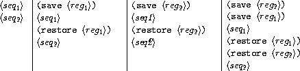

{% include JB/setup %}
{% raw %}
<div>


<a name="%_sec_5.5" id="%_sec_5.5"></a>
<h2 class="calibre23"><a href="book-Z-H-4.html#%_toc_%_sec_5.5" class="calibre19">5.5  Compilation</a></h2><p class="calibre1">


<a name="%_idx_6194" id="%_idx_6194"></a>
The explicit-control evaluator of section <a href="book-Z-H-34.html#%_sec_5.4">5.4</a> is a
register machine whose controller interprets Scheme programs.  In this
section we will see how to run Scheme programs on a register machine
whose controller is not a Scheme interpreter.</p><p class="calibre1">

<a name="%_idx_6196" id="%_idx_6196"></a><a name="%_idx_6198" id="%_idx_6198"></a>The explicit-control evaluator machine is universal – it can carry out
any computational process that can be described in Scheme.  The
evaluator's controller orchestrates the use of its data paths to
perform the desired computation.  Thus, the evaluator's data paths are
universal: They are sufficient to perform any computation we desire,
given an appropriate controller.<a name="call_footnote_Temp_794" href="#footnote_Temp_794" id="call_footnote_Temp_794"><sup class="calibre18"><small class="calibre15">33</small></sup></a></p><p class="calibre1">

<a name="%_idx_6200" id="%_idx_6200"></a><a name="%_idx_6202" id="%_idx_6202"></a>Commercial general-purpose computers are register machines organized
around a collection of registers and operations that constitute
an efficient and convenient universal set of data paths.
The controller for a general-purpose machine is an interpreter for
a register-machine language like the one we have been using.  This
language is called the <a name="%_idx_6204" id="%_idx_6204"></a><em class="calibre10">native language</em> of the machine, or simply
<a name="%_idx_6206" id="%_idx_6206"></a><em class="calibre10">machine language</em>.  Programs written in machine language are
sequences of instructions that use the machine's data paths.
For example, the <a name="%_idx_6208" id="%_idx_6208"></a>explicit-control evaluator's instruction sequence
can be thought of as a machine-language program for a general-purpose
computer rather than as the controller for a specialized interpreter
machine.</p><p class="calibre1">

<a name="%_idx_6210" id="%_idx_6210"></a><a name="%_idx_6212" id="%_idx_6212"></a>There are two common strategies for bridging the gap between
higher-level languages and register-machine languages.  The
explicit-control evaluator illustrates the
strategy of interpretation.  An interpreter written in the native
language of a machine configures the machine to execute programs
written in a language (called the <a name="%_idx_6214" id="%_idx_6214"></a><em class="calibre10">source language</em>) that may
differ from the native language of the machine performing the
evaluation.  The primitive procedures of the source language are
implemented as a library of subroutines written in the native language
of the given machine.  A program to be interpreted (called the <a name="%_idx_6216" id="%_idx_6216"></a><em class="calibre10">source program</em>) is represented as a data structure.  The interpreter
traverses this data structure, analyzing the source program.  As it
does so, it simulates the intended behavior of the source program by
calling appropriate primitive subroutines from the library.</p><p class="calibre1">


In this section, we explore the alternative strategy of <em class="calibre10">compilation</em>.  A compiler for a given source language and machine
translates a source program into an equivalent program (called the
<a name="%_idx_6218" id="%_idx_6218"></a><em class="calibre10">object program</em>) written in the machine's native language.  The
compiler that we implement in this section translates programs written
in Scheme into sequences of instructions to be executed using
the explicit-control evaluator machine's data paths.<a name="call_footnote_Temp_795" href="#footnote_Temp_795" id="call_footnote_Temp_795"><sup class="calibre18"><small class="calibre15">34</small></sup></a></p><p class="calibre1">

Compared with interpretation, compilation can provide a great increase
in the efficiency of program execution, as we will explain below in
the overview of the compiler.  On the other hand, an interpreter
provides a more powerful environment for interactive program
development and debugging, because the source program being executed
is available at run time to be examined and modified.  In addition,
because the entire library of primitives is present, new programs can
be constructed and added to the system during debugging.</p><p class="calibre1">

In view of the complementary advantages of compilation and
interpretation, modern program-development environments pursue a mixed
strategy.  Lisp interpreters are generally organized so that
interpreted procedures and compiled procedures can call each other.
This enables a programmer to compile those parts of a program that are
assumed to be debugged, thus gaining the efficiency advantage of
compilation, while retaining the interpretive mode of execution for
those parts of the program that are in the flux of interactive
development and debugging.  In
section <a href="#%_sec_5.5.7">5.5.7</a>, after we have implemented
the compiler, we will show how to interface it with our interpreter to
produce an integrated interpreter-compiler development system.</p><p class="calibre1">

<a name="%_sec_Temp_796" id="%_sec_Temp_796"></a>
</p><h4 class="calibre20"><a href="book-Z-H-4.html#%_toc_%_sec_Temp_796">An overview of the compiler</a></h4><p class="calibre1">

<a name="%_idx_6224" id="%_idx_6224"></a><a name="%_idx_6226" id="%_idx_6226"></a>
Our compiler is much like our interpreter, both in its structure and in
the function it performs.  Accordingly, the mechanisms used by the
compiler for analyzing expressions will be similar to those used by
the interpreter.  Moreover, to make it easy to interface compiled and
interpreted code, we will design the compiler to generate code that
obeys the same conventions of <a name="%_idx_6228" id="%_idx_6228"></a>register usage as the interpreter: The
environment will be kept in the <tt class="calibre16">env</tt> register, argument lists
will be accumulated in <tt class="calibre16">argl</tt>, a procedure to be applied will be
in <tt class="calibre16">proc</tt>, procedures will return their answers in <tt class="calibre16">val</tt>,
and the location to which a procedure should return will be kept in
<tt class="calibre16">continue</tt>.
In general, the compiler translates a source program into an object
program that performs essentially the same register operations as
would the interpreter in evaluating the same source program.</p><p class="calibre1">

This description suggests a strategy for implementing a rudimentary
compiler: We traverse the expression in the same way the
interpreter does.  When we encounter a register instruction that the
interpreter would perform in evaluating the expression, we do not
execute the instruction but instead accumulate it into a sequence.  The
resulting sequence of instructions will be the object code.  Observe
the <a name="%_idx_6230" id="%_idx_6230"></a><a name="%_idx_6232" id="%_idx_6232"></a>efficiency advantage of compilation over interpretation.  Each
time the interpreter evaluates an expression – for example,
<tt class="calibre16">(f 84 96)</tt> – it performs the work of
classifying the expression (discovering that this
is a procedure application) and testing for the end of the operand list
(discovering that there are two operands).  With a
compiler, the expression is analyzed only once, when the
instruction sequence is generated at compile time.  The object code
produced by the compiler contains only the instructions that evaluate
the operator and the two operands, assemble the argument list,
and apply the procedure (in <tt class="calibre16">proc</tt>) to the arguments (in <tt class="calibre16">argl</tt>).</p><p class="calibre1">


<a name="%_idx_6234" id="%_idx_6234"></a>This is the same kind of optimization we implemented in the
analyzing evaluator of section <a href="book-Z-H-26.html#%_sec_4.1.7">4.1.7</a>.
But there are further opportunities to gain efficiency in compiled code.
As the interpreter runs, it follows a process that must be applicable
to any expression in the language.  In contrast, a given segment of
compiled code is meant to execute some particular expression.  This
can make a big difference, for example in the use of the stack to
save registers.  When the interpreter evaluates an expression, it must
be prepared for any contingency.  Before evaluating a subexpression,
the interpreter saves all
registers that will be needed later, because
the subexpression might require an arbitrary evaluation.
A compiler, on the other hand, can exploit the structure of the
particular expression it is processing to generate code that avoids
unnecessary stack operations.</p><p class="calibre1">

As a case in point, consider the combination <tt class="calibre16">(f 84 96)</tt>.  Before
the interpreter evaluates the operator of the combination, it prepares
for this evaluation by saving the registers containing the operands
and the environment, whose values will be needed later.  The
interpreter then evaluates the operator to obtain the result in <tt class="calibre16">val</tt>, restores the saved registers, and finally moves the result from
<tt class="calibre16">val</tt> to <tt class="calibre16">proc</tt>.  However, in the particular expression we are
dealing with, the operator is the symbol <tt class="calibre16">f</tt>, whose evaluation is
accomplished by the machine operation <tt class="calibre16">lookup-variable-value</tt>,
which does not alter any registers.  The compiler that we implement in
this section will take advantage of this fact and generate code that
evaluates the operator using the instruction
</p><p class="calibre1"></p><p class="calibre1"><tt class="calibre16">(assign proc (op lookup-variable-value) (const f) (reg env))<br class="calibre5"/></tt></p><p class="calibre1"></p><p class="calibre1">
This code not only avoids the unnecessary saves and
restores but also assigns the value of the lookup directly to
<tt class="calibre16">proc</tt>, whereas the interpreter would obtain the result in <tt class="calibre16">val</tt>
and then move this to <tt class="calibre16">proc</tt>.</p><p class="calibre1">


A compiler can also optimize access to the environment.  Having
analyzed the code, the compiler can in many cases know in which frame
a particular variable will be located and access that frame directly,
rather than performing the <tt class="calibre16">lookup-variable-value</tt> search.  We
will discuss how to implement such variable access in
section <a href="#%_sec_5.5.6">5.5.6</a>.  Until then, however, we will
focus on the kind of register and stack optimizations described above.
There are many other optimizations that can be performed by a
compiler, such as coding primitive operations “in line” instead of
using a general <tt class="calibre16">apply</tt> mechanism (see
exercise <a href="#%_thm_5.38">5.38</a>); but we will not emphasize these here.
Our main goal in this section is to illustrate the compilation process
in a simplified (but still interesting) context.</p><p class="calibre1">

<a name="%_sec_5.5.1" id="%_sec_5.5.1"></a>
</p><h3 class="calibre26"><a href="book-Z-H-4.html#%_toc_%_sec_5.5.1" class="calibre19">5.5.1  Structure of the Compiler</a></h3><p class="calibre1">


<a name="%_idx_6236" id="%_idx_6236"></a>
<a name="%_idx_6238" id="%_idx_6238"></a>In section <a href="book-Z-H-26.html#%_sec_4.1.7">4.1.7</a> we modified our original
metacircular interpreter to separate analysis from execution.  We
analyzed each expression to produce an execution procedure that took
an environment as argument and performed the required operations.  In
our compiler, we will do essentially the same analysis.  Instead of
producing execution procedures, however, we will generate sequences of
instructions to be run by our register machine.</p><p class="calibre1">


The procedure <tt class="calibre16">compile</tt> is the top-level dispatch in the compiler.
It corresponds to the <tt class="calibre16">eval</tt> procedure of
section <a href="book-Z-H-26.html#%_sec_4.1.1">4.1.1</a>, the <tt class="calibre16">analyze</tt> procedure of
section <a href="book-Z-H-26.html#%_sec_4.1.7">4.1.7</a>, and the <tt class="calibre16">eval-dispatch</tt>
entry point of the explicit-control-evaluator in
section <a href="book-Z-H-34.html#%_sec_5.4.1">5.4.1</a>.
The compiler, like the interpreters, uses the <a name="%_idx_6240" id="%_idx_6240"></a>expression-syntax
procedures defined in section <a href="book-Z-H-26.html#%_sec_4.1.2">4.1.2</a>.<a name="call_footnote_Temp_797" href="#footnote_Temp_797" id="call_footnote_Temp_797"><sup class="calibre18"><small class="calibre15">35</small></sup></a>
<tt class="calibre16">Compile</tt> performs a case
analysis on the syntactic type of the expression to be compiled.  For
each type of expression, it dispatches to a specialized <a name="%_idx_6242" id="%_idx_6242"></a><em class="calibre10">code
generator</em>:</p><p class="calibre1">

</p><p class="calibre1"></p><p class="calibre1"><tt class="calibre16"><a name="%_idx_6244" id="%_idx_6244"></a>(define (compile exp target linkage)<br class="calibre5"/>
  (cond ((self-evaluating? exp)<br class="calibre5"/>
         (compile-self-evaluating exp target linkage))<br class="calibre5"/>
        ((quoted? exp) (compile-quoted exp target linkage))<br class="calibre5"/>
        ((variable? exp)<br class="calibre5"/>
         (compile-variable exp target linkage))<br class="calibre5"/>
        ((assignment? exp)<br class="calibre5"/>
         (compile-assignment exp target linkage))<br class="calibre5"/>
        ((definition? exp)<br class="calibre5"/>
         (compile-definition exp target linkage))<br class="calibre5"/>
        ((if? exp) (compile-if exp target linkage))<br class="calibre5"/>
        ((lambda? exp) (compile-lambda exp target linkage))<br class="calibre5"/>
        ((begin? exp)<br class="calibre5"/>
         (compile-sequence (begin-actions exp)<br class="calibre5"/>
                           target<br class="calibre5"/>
                           linkage))<br class="calibre5"/>
        ((cond? exp) (compile (cond-&gt;if exp) target linkage))<br class="calibre5"/>
        ((application? exp)<br class="calibre5"/>
         (compile-application exp target linkage))<br class="calibre5"/>
        (else<br class="calibre5"/>
         (error "Unknown expression type -- COMPILE" exp))))<br class="calibre5"/></tt></p><p class="calibre1"></p><p class="calibre1"></p><p class="calibre1">


<a name="%_sec_Temp_798" id="%_sec_Temp_798"></a>
</p><h4 class="calibre20"><a href="book-Z-H-4.html#%_toc_%_sec_Temp_798">Targets and linkages</a></h4><p class="calibre1">

<a name="%_idx_6246" id="%_idx_6246"></a><tt class="calibre16">Compile</tt> and the code generators that it calls take two arguments
in addition to the expression to compile.  There is a <a name="%_idx_6248" id="%_idx_6248"></a><em class="calibre10">target</em>,
which specifies the register in which the compiled code is to return
the value of the expression.  There is also a <a name="%_idx_6250" id="%_idx_6250"></a><em class="calibre10">linkage
descriptor</em>, which describes how the code resulting from the
compilation of the expression should proceed when it has finished its
execution.  The linkage descriptor can require that the code do one of
the following three things:</p><p class="calibre1">

</p><p class="calibre1"></p><ul class="calibre24"><li class="calibre25">continue at the next instruction in sequence (this is
<a name="%_idx_6252" id="%_idx_6252"></a>specified by the linkage descriptor <tt class="calibre16">next</tt>),<p class="calibre1">

</p></li><li class="calibre25">return from the procedure being compiled (this is specified
<a name="%_idx_6254" id="%_idx_6254"></a>by the linkage descriptor <tt class="calibre16">return</tt>), or<p class="calibre1">

</p></li><li class="calibre25">jump to a named entry point (this is specified by using the
designated label as the linkage descriptor).
</li></ul><p class="calibre1"></p><p class="calibre1">

For example, compiling the expression <tt class="calibre16">5</tt> (which is
self-evaluating) with a target of the <tt class="calibre16">val</tt> register and a
linkage of <tt class="calibre16">next</tt> should produce the instruction</p><p class="calibre1">

</p><p class="calibre1"></p><p class="calibre1"><tt class="calibre16">(assign val (const 5))<br class="calibre5"/></tt></p><p class="calibre1"></p><p class="calibre1">
Compiling the same expression with a linkage of <tt class="calibre16">return</tt> should
produce the instructions</p><p class="calibre1">

</p><p class="calibre1"></p><p class="calibre1"><tt class="calibre16">(assign val (const 5))<br class="calibre5"/>
(goto (reg continue))<br class="calibre5"/></tt></p><p class="calibre1"></p><p class="calibre1">
In the first case, execution will continue with the next instruction
in the sequence. In the second case, we will return from a procedure
call.  In both cases, the value of the expression will be placed into
the target <tt class="calibre16">val</tt> register.</p><p class="calibre1">

<a name="%_sec_Temp_799" id="%_sec_Temp_799"></a>
</p><h4 class="calibre20"><a href="book-Z-H-4.html#%_toc_%_sec_Temp_799">Instruction sequences and stack usage</a></h4><p class="calibre1">

</p><p class="calibre1">

<a name="%_idx_6256" id="%_idx_6256"></a><a name="%_idx_6258" id="%_idx_6258"></a>Each code generator returns an <em class="calibre10">instruction sequence</em> containing
the object code it has generated for the expression.  Code generation
for a compound expression is accomplished by combining the output from
simpler code generators for component expressions, just as
evaluation of a compound expression is accomplished by evaluating the
component expressions.</p><p class="calibre1">


The simplest method for combining instruction sequences is a procedure
<a name="%_idx_6260" id="%_idx_6260"></a>called <tt class="calibre16">append-instruction-sequences</tt>.  It takes as arguments any
number of instruction sequences that are to be executed sequentially;
it appends them and returns the combined sequence.  That is, if
&lt;<em class="calibre10"><em class="calibre10">s</em><em class="calibre10">e</em><em class="calibre10">q</em><sub class="calibre30">1</sub></em>&gt; and &lt;<em class="calibre10"><em class="calibre10">s</em><em class="calibre10">e</em><em class="calibre10">q</em><sub class="calibre30">2</sub></em>&gt; are sequences of instructions, then
evaluating
</p><p class="calibre1"></p><p class="calibre1"><tt class="calibre16">(append-instruction-sequences &lt;<em class="calibre10"><em class="calibre10">s</em><em class="calibre10">e</em><em class="calibre10">q</em><sub class="calibre30">1</sub></em>&gt; &lt;<em class="calibre10"><em class="calibre10">s</em><em class="calibre10">e</em><em class="calibre10">q</em><sub class="calibre30">2</sub></em>&gt;)<br class="calibre5"/></tt></p><p class="calibre1"></p><p class="calibre1">
produces the sequence
</p><p class="calibre1"></p><p class="calibre1"><tt class="calibre16">&lt;<em class="calibre10"><em class="calibre10">s</em><em class="calibre10">e</em><em class="calibre10">q</em><sub class="calibre30">1</sub></em>&gt;<br class="calibre5"/>
&lt;<em class="calibre10"><em class="calibre10">s</em><em class="calibre10">e</em><em class="calibre10">q</em><sub class="calibre30">2</sub></em>&gt;<br class="calibre5"/></tt></p><p class="calibre1"></p><p class="calibre1"></p><p class="calibre1">

<a name="%_idx_6262" id="%_idx_6262"></a>Whenever registers might need to be saved, the compiler's code generators use
<a name="%_idx_6264" id="%_idx_6264"></a><tt class="calibre16">preserving</tt>, which is a more subtle method for combining
instruction sequences.  <tt class="calibre16">Preserving</tt> takes three arguments: a set
of registers and two instruction sequences that are to be executed
sequentially.  It appends the sequences in such a way that the
contents of each register in the set is preserved over the execution
of the first sequence, if this is needed for the execution of the
second sequence.  That is, if the first sequence modifies the register
and the second sequence actually needs the register's original
contents, then <tt class="calibre16">preserving</tt> wraps a <tt class="calibre16">save</tt> and a <tt class="calibre16">restore</tt>
of the register around the first sequence before appending the
sequences.  Otherwise, <tt class="calibre16">preserving</tt> simply returns the appended
instruction sequences.  Thus, for example,
</p><p class="calibre1"></p><p class="calibre1"><tt class="calibre16">(preserving (list &lt;<em class="calibre10"><em class="calibre10">r</em><em class="calibre10">e</em><em class="calibre10">g</em><sub class="calibre30">1</sub></em>&gt; &lt;<em class="calibre10"><em class="calibre10">r</em><em class="calibre10">e</em><em class="calibre10">g</em><sub class="calibre30">2</sub></em>&gt;) &lt;<em class="calibre10"><em class="calibre10">s</em><em class="calibre10">e</em><em class="calibre10">q</em><sub class="calibre30">1</sub></em>&gt; &lt;<em class="calibre10"><em class="calibre10">s</em><em class="calibre10">e</em><em class="calibre10">q</em><sub class="calibre30">2</sub></em>&gt;)<br class="calibre5"/></tt></p><p class="calibre1"></p><p class="calibre1">
produces one of the following four sequences of instructions, depending on how
&lt;<em class="calibre10"><em class="calibre10">s</em><em class="calibre10">e</em><em class="calibre10">q</em><sub class="calibre30">1</sub></em>&gt; and &lt;<em class="calibre10"><em class="calibre10">s</em><em class="calibre10">e</em><em class="calibre10">q</em><sub class="calibre30">2</sub></em>&gt; use &lt;<em class="calibre10"><em class="calibre10">r</em><em class="calibre10">e</em><em class="calibre10">g</em><sub class="calibre30">1</sub></em>&gt; and &lt;<em class="calibre10"><em class="calibre10">r</em><em class="calibre10">e</em><em class="calibre10">g</em><sub class="calibre30">2</sub></em>&gt;:</p><p class="calibre1">

</p><p class="calibre1"></p><p class="calibre1"></p><p class="calibre1"></p><div class="calibre4"></div><p class="calibre1"></p><p class="calibre1">

By using <tt class="calibre16">preserving</tt> to combine instruction sequences the
compiler avoids unnecessary stack operations.  This also isolates the
details of whether or not to generate <tt class="calibre16">save</tt> and <tt class="calibre16">restore</tt>
instructions within the <tt class="calibre16">preserving</tt> procedure, separating them
from the concerns that arise in writing each of the individual code
generators.
In fact no <tt class="calibre16">save</tt> or <tt class="calibre16">restore</tt> instructions are explicitly
produced by the code generators.</p><p class="calibre1">

In principle, we could represent an instruction sequence simply as a
list of instructions.  <tt class="calibre16">Append-instruction-sequences</tt> could then
combine instruction sequences by performing an ordinary list <tt class="calibre16">append</tt>.  However, <tt class="calibre16">preserving</tt> would then be a complex operation,
because it would have to analyze each instruction sequence to
determine how the sequence uses its registers.  <tt class="calibre16">Preserving</tt>
would be inefficient as well as complex, because it would have to
analyze each of its instruction sequence arguments, even though these
sequences might themselves have been constructed by calls to <tt class="calibre16">preserving</tt>, in which case their parts would have already been
analyzed.  To avoid such repetitious analysis we will associate with each
instruction sequence some information about its register use.
When we construct a basic instruction sequence we
will provide this information explicitly,
and the procedures that combine instruction sequences will derive
register-use information for the combined sequence from the
information associated with the component sequences.</p><p class="calibre1">

An instruction sequence will contain three pieces of information:
</p><p class="calibre1"></p><ul class="calibre24"><li class="calibre25">the set of registers that must be initialized before the
instructions in the sequence are executed (these registers are said to
be <em class="calibre10">needed</em> by the sequence),<p class="calibre1">

</p></li><li class="calibre25">the set of registers whose values are modified by the
instructions in the sequence, and<p class="calibre1">

</p></li><li class="calibre25">the actual instructions (also called <em class="calibre10">statements</em>) in
the sequence.
</li></ul><p class="calibre1"></p><p class="calibre1">

We will represent an instruction sequence as a list of its three
parts.  The constructor for instruction sequences is thus</p><p class="calibre1">

</p><p class="calibre1"></p><p class="calibre1"><tt class="calibre16"><a name="%_idx_6266" id="%_idx_6266"></a>(define (make-instruction-sequence needs modifies statements)<br class="calibre5"/>
  (list needs modifies statements))<br class="calibre5"/></tt></p><p class="calibre1"></p><p class="calibre1"></p><p class="calibre1">

For example, the two-instruction sequence that looks up the value of
the variable <tt class="calibre16">x</tt> in the current environment, assigns the result
to <tt class="calibre16">val</tt>, and then returns, requires registers <tt class="calibre16">env</tt> and <tt class="calibre16">continue</tt> to have been initialized, and modifies register <tt class="calibre16">val</tt>.
This sequence would therefore be constructed as</p><p class="calibre1">

</p><p class="calibre1"></p><p class="calibre1"><tt class="calibre16">(make-instruction-sequence '(env continue) '(val)<br class="calibre5"/>
 '((assign val<br class="calibre5"/>
           (op lookup-variable-value) (const x) (reg env))<br class="calibre5"/>
   (goto (reg continue))))<br class="calibre5"/></tt></p><p class="calibre1"></p><p class="calibre1"></p><p class="calibre1">

We sometimes need to construct an instruction sequence with no statements:
</p><p class="calibre1"></p><p class="calibre1"><tt class="calibre16"><a name="%_idx_6268" id="%_idx_6268"></a>(define (empty-instruction-sequence)<br class="calibre5"/>
  (make-instruction-sequence '() '() '()))<br class="calibre5"/></tt></p><p class="calibre1"></p><p class="calibre1">
</p><p class="calibre1">

The procedures for combining instruction sequences are shown in
section <a href="#%_sec_5.5.4">5.5.4</a>.</p><p class="calibre1">

</p><p class="calibre1"><a name="%_thm_5.31" id="%_thm_5.31"></a>
<b class="calibre9">Exercise 5.31.</b>  <a name="%_idx_6270" id="%_idx_6270"></a><a name="%_idx_6272" id="%_idx_6272"></a>In evaluating a procedure application, the explicit-control evaluator
always saves and restores
the <tt class="calibre16">env</tt> register around the evaluation of the operator, saves and
restores <tt class="calibre16">env</tt> around the evaluation of each operand (except the
final one), saves and restores <tt class="calibre16">argl</tt> around the evaluation of each
operand, and saves and restores <tt class="calibre16">proc</tt> around the evaluation of the
operand sequence.  For each of the following combinations, say which
of these <tt class="calibre16">save</tt> and <tt class="calibre16">restore</tt> operations are superfluous and
thus could be eliminated by the compiler's <tt class="calibre16">preserving</tt> mechanism:</p><p class="calibre1">

</p><p class="calibre1"></p><p class="calibre1"><tt class="calibre16">(f 'x 'y)<br class="calibre5"/><br class="calibre5"/>
((f) 'x 'y)<br class="calibre5"/><br class="calibre5"/>
(f (g 'x) y)<br class="calibre5"/><br class="calibre5"/>
(f (g 'x) 'y)<br class="calibre5"/></tt></p><p class="calibre1"></p><p class="calibre1">
</p><p class="calibre1"></p><p class="calibre1">

</p><p class="calibre1"><a name="%_thm_5.32" id="%_thm_5.32"></a>
<b class="calibre9">Exercise 5.32.</b>  <a name="%_idx_6274" id="%_idx_6274"></a><a name="%_idx_6276" id="%_idx_6276"></a>Using the <tt class="calibre16">preserving</tt> mechanism, the compiler will avoid saving
and restoring <tt class="calibre16">env</tt> around the evaluation of the operator of a
combination in the case where the operator is a symbol.  We could also
build such optimizations into the evaluator.  Indeed, the
explicit-control evaluator of section <a href="book-Z-H-34.html#%_sec_5.4">5.4</a> already
performs a similar optimization, by treating combinations with no
operands as a special case.</p><p class="calibre1">

</p><p class="calibre1"></p><p class="calibre1">a. Extend the explicit-control evaluator to recognize as a separate class
of expressions combinations whose operator is a symbol, and to take
advantage of this fact in evaluating such expressions.</p><p class="calibre1">

</p><p class="calibre1"></p><p class="calibre1">b. Alyssa P. Hacker suggests that by extending the evaluator to recognize
more and more special cases we could incorporate all the compiler's
optimizations, and that this would eliminate the advantage of compilation
altogether.  What do you think of this idea?
</p><p class="calibre1"></p><p class="calibre1">

<a name="%_sec_5.5.2" id="%_sec_5.5.2"></a>
</p><h3 class="calibre26"><a href="book-Z-H-4.html#%_toc_%_sec_5.5.2" class="calibre19">5.5.2  Compiling Expressions</a></h3><p class="calibre1">

In this section and the next we implement the code generators to which the <tt class="calibre16">compile</tt> procedure dispatches.</p><p class="calibre1">

<a name="%_sec_Temp_802" id="%_sec_Temp_802"></a>
</p><h4 class="calibre20"><a href="book-Z-H-4.html#%_toc_%_sec_Temp_802">Compiling linkage code</a></h4><p class="calibre1">

<a name="%_idx_6278" id="%_idx_6278"></a>In general, the output of each code generator will end with
instructions – generated by the procedure <tt class="calibre16">compile-linkage</tt> – that
implement the required linkage.  If the linkage is <tt class="calibre16">return</tt> then
we must generate the instruction <tt class="calibre16">(goto (reg continue))</tt>.  This
needs the <tt class="calibre16">continue</tt> register and does not modify any registers.
If the linkage is <tt class="calibre16">next</tt>, then we needn't include any additional
instructions.  Otherwise, the linkage is a label, and we generate a
<tt class="calibre16">goto</tt> to that label, an instruction that does not need or modify
any registers.<a name="call_footnote_Temp_803" href="#footnote_Temp_803" id="call_footnote_Temp_803"><sup class="calibre18"><small class="calibre15">36</small></sup></a></p><p class="calibre1">


</p><p class="calibre1"></p><p class="calibre1"><tt class="calibre16"><a name="%_idx_6292" id="%_idx_6292"></a>(define (compile-linkage linkage)<br class="calibre5"/>
  (cond ((eq? linkage 'return)<br class="calibre5"/>
         (make-instruction-sequence '(continue) '()<br class="calibre5"/>
          '((goto (reg continue)))))<br class="calibre5"/>
        ((eq? linkage 'next)<br class="calibre5"/>
         (empty-instruction-sequence))<br class="calibre5"/>
        (else<br class="calibre5"/>
         (make-instruction-sequence '() '()<br class="calibre5"/>
          `((goto (label ,linkage)))))))<br class="calibre5"/></tt></p><p class="calibre1"></p><p class="calibre1">
The linkage code is appended to an instruction sequence by <tt class="calibre16">preserving</tt>
the <tt class="calibre16">continue</tt> register, since a <tt class="calibre16">return</tt> linkage will
require the <tt class="calibre16">continue</tt> register:
If the given instruction sequence modifies <tt class="calibre16">continue</tt> and the
linkage code needs it, <tt class="calibre16">continue</tt> will be saved and restored.</p><p class="calibre1">


</p><p class="calibre1"></p><p class="calibre1"><tt class="calibre16"><a name="%_idx_6294" id="%_idx_6294"></a>(define (end-with-linkage linkage instruction-sequence)<br class="calibre5"/>
  (preserving '(continue)<br class="calibre5"/>
   instruction-sequence<br class="calibre5"/>
   (compile-linkage linkage)))<br class="calibre5"/></tt></p><p class="calibre1"></p><p class="calibre1"></p><p class="calibre1">

</p><p class="calibre1">

<a name="%_sec_Temp_804" id="%_sec_Temp_804"></a>
</p><h4 class="calibre20"><a href="book-Z-H-4.html#%_toc_%_sec_Temp_804">Compiling simple expressions</a></h4><p class="calibre1">

<a name="%_idx_6296" id="%_idx_6296"></a><a name="%_idx_6298" id="%_idx_6298"></a><a name="%_idx_6300" id="%_idx_6300"></a>The code generators for self-evaluating expressions,
quotations, and variables construct instruction
sequences that assign the required value to the target register
and then proceed as specified by the linkage descriptor.</p><p class="calibre1">


</p><p class="calibre1"></p><p class="calibre1"><tt class="calibre16"><a name="%_idx_6302" id="%_idx_6302"></a>(define (compile-self-evaluating exp target linkage)<br class="calibre5"/>
  (end-with-linkage linkage<br class="calibre5"/>
   (make-instruction-sequence '() (list target)<br class="calibre5"/>
    `((assign ,target (const ,exp))))))<br class="calibre5"/><a name="%_idx_6304" id="%_idx_6304"></a>(define (compile-quoted exp target linkage)<br class="calibre5"/>
  (end-with-linkage linkage<br class="calibre5"/>
   (make-instruction-sequence '() (list target)<br class="calibre5"/>
    `((assign ,target (const ,(text-of-quotation exp)))))))<br class="calibre5"/><a name="%_idx_6306" id="%_idx_6306"></a>(define (compile-variable exp target linkage)<br class="calibre5"/>
  (end-with-linkage linkage<br class="calibre5"/>
   (make-instruction-sequence '(env) (list target)<br class="calibre5"/>
    `((assign ,target<br class="calibre5"/>
              (op lookup-variable-value)<br class="calibre5"/>
              (const ,exp)<br class="calibre5"/>
              (reg env))))))<br class="calibre5"/></tt></p><p class="calibre1"></p><p class="calibre1">
All these assignment instructions modify the target register,
and the one that looks up a variable needs the <tt class="calibre16">env</tt> register.</p><p class="calibre1">

<a name="%_idx_6308" id="%_idx_6308"></a><a name="%_idx_6310" id="%_idx_6310"></a>Assignments and definitions are handled much as they are in the
interpreter.  We recursively generate code that computes the value to
be assigned to the variable, and append to it a two-instruction
sequence that actually sets or defines the variable and assigns the
value of the whole expression (the symbol <tt class="calibre16">ok</tt>) to the target
register.  The recursive compilation has target <tt class="calibre16">val</tt> and linkage
<tt class="calibre16">next</tt> so that the code will put its result into <tt class="calibre16">val</tt> and
continue with the code that is appended after it.  The appending is
done preserving <tt class="calibre16">env</tt>, since the environment is needed for setting
or defining the variable and the code for the variable value could be
the compilation of a complex expression that might modify the
registers in arbitrary ways.</p><p class="calibre1">

</p><p class="calibre1"></p><p class="calibre1"><tt class="calibre16"><a name="%_idx_6312" id="%_idx_6312"></a>(define (compile-assignment exp target linkage)<br class="calibre5"/>
  (let ((var (assignment-variable exp))<br class="calibre5"/>
        (get-value-code<br class="calibre5"/>
         (compile (assignment-value exp) 'val 'next)))<br class="calibre5"/>
    (end-with-linkage linkage<br class="calibre5"/>
     (preserving '(env)<br class="calibre5"/>
      get-value-code<br class="calibre5"/>
      (make-instruction-sequence '(env val) (list target)<br class="calibre5"/>
       `((perform (op set-variable-value!)<br class="calibre5"/>
                  (const ,var)<br class="calibre5"/>
                  (reg val)<br class="calibre5"/>
                  (reg env))<br class="calibre5"/>
         (assign ,target (const ok))))))))<br class="calibre5"/><a name="%_idx_6314" id="%_idx_6314"></a>(define (compile-definition exp target linkage)<br class="calibre5"/>
  (let ((var (definition-variable exp))<br class="calibre5"/>
        (get-value-code<br class="calibre5"/>
         (compile (definition-value exp) 'val 'next)))<br class="calibre5"/>
    (end-with-linkage linkage<br class="calibre5"/>
     (preserving '(env)<br class="calibre5"/>
      get-value-code<br class="calibre5"/>
      (make-instruction-sequence '(env val) (list target)<br class="calibre5"/>
       `((perform (op define-variable!)<br class="calibre5"/>
                  (const ,var)<br class="calibre5"/>
                  (reg val)<br class="calibre5"/>
                  (reg env))<br class="calibre5"/>
         (assign ,target (const ok))))))))<br class="calibre5"/></tt></p><p class="calibre1"></p><p class="calibre1">
The appended two-instruction sequence requires <tt class="calibre16">env</tt> and <tt class="calibre16">val</tt>
and modifies the target.  Note that although we preserve <tt class="calibre16">env</tt> for
this sequence, we do not preserve <tt class="calibre16">val</tt>, because the <tt class="calibre16">get-value-code</tt> is designed to explicitly place its result in <tt class="calibre16">val</tt> for use by this sequence.
(In fact, if we did preserve <tt class="calibre16">val</tt>, we would
have a bug, because this would cause the previous contents of <tt class="calibre16">val</tt> to be restored right after the <tt class="calibre16">get-value-code</tt> is run.)</p><p class="calibre1">

<a name="%_sec_Temp_805" id="%_sec_Temp_805"></a>
</p><h4 class="calibre20"><a href="book-Z-H-4.html#%_toc_%_sec_Temp_805">Compiling conditional expressions</a></h4><p class="calibre1">

<a name="%_idx_6316" id="%_idx_6316"></a>The code for an <tt class="calibre16">if</tt> expression
compiled with a given target and linkage has the form</p><p class="calibre1">

</p><p class="calibre1"></p><p class="calibre1"><tt class="calibre16"> &lt;<em class="calibre10">compilation of predicate, target <tt class="calibre16">val</tt>, linkage <tt class="calibre16">next</tt></em>&gt;<br class="calibre5"/>
 (test (op false?) (reg val))<br class="calibre5"/>
 (branch (label false-branch))<br class="calibre5"/>
true-branch<br class="calibre5"/>
 &lt;<em class="calibre10">compilation of consequent with given target and given linkage or <tt class="calibre16">after-if</tt></em>&gt;<br class="calibre5"/>
false-branch<br class="calibre5"/>
 &lt;<em class="calibre10">compilation of alternative with given target and linkage</em>&gt;<br class="calibre5"/>
after-if<br class="calibre5"/></tt></p><p class="calibre1"></p><p class="calibre1"></p><p class="calibre1">

To generate this code, we compile the predicate, consequent,
and alternative, and combine the resulting code with instructions
to test the predicate result and with newly generated labels
to mark the true and false branches and the end of the conditional.<a name="call_footnote_Temp_806" href="#footnote_Temp_806" id="call_footnote_Temp_806"><sup class="calibre18"><small class="calibre15">37</small></sup></a>
In this arrangement of code, we must branch around the true branch
if the test is false.  The only slight complication is in how the
linkage for the true branch should be handled.  If the linkage for the
conditional is <tt class="calibre16">return</tt> or a label, then the true and false
branches will both use this same linkage.  If the linkage is <tt class="calibre16">next</tt>, the true branch ends with a jump around the code for the false
branch to the label at the end of the conditional.</p><p class="calibre1">


</p><p class="calibre1"></p><p class="calibre1"><tt class="calibre16"><a name="%_idx_6324" id="%_idx_6324"></a>(define (compile-if exp target linkage)<br class="calibre5"/>
  (let ((t-branch (make-label 'true-branch))<br class="calibre5"/>
        (f-branch (make-label 'false-branch))                    <br class="calibre5"/>
        (after-if (make-label 'after-if)))<br class="calibre5"/>
    (let ((consequent-linkage<br class="calibre5"/>
           (if (eq? linkage 'next) after-if linkage)))<br class="calibre5"/>
      (let ((p-code (compile (if-predicate exp) 'val 'next))<br class="calibre5"/>
            (c-code<br class="calibre5"/>
             (compile<br class="calibre5"/>
              (if-consequent exp) target consequent-linkage))<br class="calibre5"/>
            (a-code<br class="calibre5"/>
             (compile (if-alternative exp) target linkage)))<br class="calibre5"/>
        (preserving '(env continue)<br class="calibre5"/>
         p-code<br class="calibre5"/>
         (append-instruction-sequences<br class="calibre5"/>
          (make-instruction-sequence '(val) '()<br class="calibre5"/>
           `((test (op false?) (reg val))<br class="calibre5"/>
             (branch (label ,f-branch))))<br class="calibre5"/>
          (parallel-instruction-sequences<br class="calibre5"/>
           (append-instruction-sequences t-branch c-code)<br class="calibre5"/>
           (append-instruction-sequences f-branch a-code))<br class="calibre5"/>
          after-if))))))<br class="calibre5"/></tt></p><p class="calibre1"></p><p class="calibre1">
<tt class="calibre16">Env</tt> is preserved around the predicate code because it could be needed by
the true and false branches, and <tt class="calibre16">continue</tt> is preserved because it could
be needed by the linkage code in those branches.  The code for the true and
false branches (which are not executed sequentially) is appended using a
special combiner <tt class="calibre16">parallel-instruction-sequences</tt> described in
section <a href="#%_sec_5.5.4">5.5.4</a>.</p><p class="calibre1">


Note that <tt class="calibre16">cond</tt> is a derived expression, so all that the
compiler needs to do handle it is to apply the <tt class="calibre16">cond-&gt;if</tt>
transformer (from section <a href="book-Z-H-26.html#%_sec_4.1.2">4.1.2</a>) and
compile the resulting <tt class="calibre16">if</tt> expression.</p><p class="calibre1">

<a name="%_sec_Temp_807" id="%_sec_Temp_807"></a>
</p><h4 class="calibre20"><a href="book-Z-H-4.html#%_toc_%_sec_Temp_807">Compiling sequences</a></h4><p class="calibre1">

<a name="%_idx_6326" id="%_idx_6326"></a>The compilation of sequences (from procedure bodies or explicit <tt class="calibre16">begin</tt> expressions) parallels their evaluation.  Each expression of the
sequence is compiled – the last expression with the linkage specified
for the sequence, and the other expressions with linkage <tt class="calibre16">next</tt>
(to execute the rest of the sequence).
The instruction sequences for the individual expressions are appended
to form a single instruction sequence, such that <tt class="calibre16">env</tt> (needed for
the rest of the sequence) and <tt class="calibre16">continue</tt> (possibly needed for the
linkage at the end of the sequence) are preserved.</p><p class="calibre1">

</p><p class="calibre1"></p><p class="calibre1"><tt class="calibre16"><a name="%_idx_6328" id="%_idx_6328"></a>(define (compile-sequence seq target linkage)<br class="calibre5"/>
  (if (last-exp? seq)<br class="calibre5"/>
      (compile (first-exp seq) target linkage)<br class="calibre5"/>
      (preserving '(env continue)<br class="calibre5"/>
       (compile (first-exp seq) target 'next)<br class="calibre5"/>
       (compile-sequence (rest-exps seq) target linkage))))<br class="calibre5"/></tt></p><p class="calibre1"></p><p class="calibre1"></p><p class="calibre1">

<a name="%_sec_Temp_808" id="%_sec_Temp_808"></a>
</p><h4 class="calibre20"><a href="book-Z-H-4.html#%_toc_%_sec_Temp_808">Compiling <tt class="calibre16">lambda</tt> expressions</a></h4><p class="calibre1">

<a name="%_idx_6330" id="%_idx_6330"></a><tt class="calibre16">Lambda</tt> expressions construct procedures.
The object code for a <tt class="calibre16">lambda</tt> expression must have the form</p><p class="calibre1">

</p><p class="calibre1"></p><p class="calibre1"><tt class="calibre16">&lt;<em class="calibre10">construct procedure object and assign it to target register</em>&gt;<br class="calibre5"/>
&lt;<em class="calibre10">linkage</em>&gt;<br class="calibre5"/></tt></p><p class="calibre1"></p><p class="calibre1">
When we compile the <tt class="calibre16">lambda</tt> expression, we also generate the code for the
procedure body.  Although the body won't be executed at the time of procedure
construction, it is convenient to insert it into the object code right after
the code for the <tt class="calibre16">lambda</tt>.  If the linkage for the <tt class="calibre16">lambda</tt> expression
is a label or <tt class="calibre16">return</tt>, this is fine.  But if the linkage is <tt class="calibre16">next</tt>,
we will need to skip around the code for the procedure body by using a linkage
that jumps to a label that is inserted after the body.  The object code thus
has the form</p><p class="calibre1">

</p><p class="calibre1"></p><p class="calibre1"><tt class="calibre16"> &lt;<em class="calibre10">construct procedure object and assign it to target register</em>&gt;<br class="calibre5"/>
 &lt;<em class="calibre10">code for given linkage</em>&gt;<em class="calibre10">or</em> <tt class="calibre16">(goto (label after-lambda))</tt><br class="calibre5"/>
 &lt;<em class="calibre10">compilation of procedure body</em>&gt;<br class="calibre5"/>
after-lambda<br class="calibre5"/></tt></p><p class="calibre1"></p><p class="calibre1"></p><p class="calibre1">

<tt class="calibre16">Compile-lambda</tt> generates the code for constructing the procedure
object followed by the code for the procedure body.
The procedure object will be constructed at run time by combining
the current environment (the environment at the point of definition)
with the entry point to the compiled procedure body (a newly generated
label).<a name="call_footnote_Temp_809" href="#footnote_Temp_809" id="call_footnote_Temp_809"><sup class="calibre18"><small class="calibre15">38</small></sup></a></p><p class="calibre1">

</p><p class="calibre1"></p><p class="calibre1"><tt class="calibre16"><a name="%_idx_6340" id="%_idx_6340"></a>(define (compile-lambda exp target linkage)<br class="calibre5"/>
  (let ((proc-entry (make-label 'entry))<br class="calibre5"/>
        (after-lambda (make-label 'after-lambda)))<br class="calibre5"/>
    (let ((lambda-linkage<br class="calibre5"/>
           (if (eq? linkage 'next) after-lambda linkage)))<br class="calibre5"/>
      (append-instruction-sequences<br class="calibre5"/>
       (tack-on-instruction-sequence<br class="calibre5"/>
        (end-with-linkage lambda-linkage<br class="calibre5"/>
         (make-instruction-sequence '(env) (list target)<br class="calibre5"/>
          `((assign ,target<br class="calibre5"/>
                    (op make-compiled-procedure)<br class="calibre5"/>
                    (label ,proc-entry)<br class="calibre5"/>
                    (reg env)))))<br class="calibre5"/>
        (compile-lambda-body exp proc-entry))<br class="calibre5"/>
       after-lambda))))<br class="calibre5"/></tt></p><p class="calibre1"></p><p class="calibre1">
<tt class="calibre16">Compile-lambda</tt> uses the special combiner <tt class="calibre16">tack-on-instruction-sequence</tt>
(section <a href="#%_sec_5.5.4">5.5.4</a>) rather than <tt class="calibre16">append-instruction-sequences</tt> to append the procedure body to the <tt class="calibre16">lambda</tt>
expression code, because the body is not part of the sequence of instructions
that will be executed when the combined sequence is entered; rather, it is in
the sequence only because that was a convenient place to put it.</p><p class="calibre1">


<tt class="calibre16">Compile-lambda-body</tt> constructs the code for the body of the
procedure.  This code begins with a label for the entry point.  Next
come instructions that will cause the run-time evaluation environment
to switch to the correct environment for evaluating the procedure
body – namely, the definition environment of the procedure, extended
to include the bindings of the formal parameters to the arguments with
which the procedure is called.  After this comes the code for the
sequence of expressions that makes up the procedure body.
The sequence is compiled with linkage <tt class="calibre16">return</tt> and target <tt class="calibre16">val</tt>
so that it will end by returning from the procedure with the
procedure result in <tt class="calibre16">val</tt>.</p><p class="calibre1">

</p><p class="calibre1"></p><p class="calibre1"><tt class="calibre16">(define (compile-lambda-body exp proc-entry)<br class="calibre5"/>
  (let ((formals (lambda-parameters exp)))<br class="calibre5"/>
    (append-instruction-sequences<br class="calibre5"/>
     (make-instruction-sequence '(env proc argl) '(env)<br class="calibre5"/>
      `(,proc-entry<br class="calibre5"/>
        (assign env (op compiled-procedure-env) (reg proc))<br class="calibre5"/>
        (assign env<br class="calibre5"/>
                (op extend-environment)<br class="calibre5"/>
                (const ,formals)<br class="calibre5"/>
                (reg argl)<br class="calibre5"/>
                (reg env))))<br class="calibre5"/>
     (compile-sequence (lambda-body exp) 'val 'return))))<br class="calibre5"/></tt></p><p class="calibre1"></p><p class="calibre1"></p><p class="calibre1">

<a name="%_sec_5.5.3" id="%_sec_5.5.3"></a>
</p><h3 class="calibre26"><a href="book-Z-H-4.html#%_toc_%_sec_5.5.3" class="calibre19">5.5.3  Compiling Combinations</a></h3><p class="calibre1">


<a name="%_idx_6342" id="%_idx_6342"></a><a name="%_idx_6344" id="%_idx_6344"></a>
The essence of the compilation process is the compilation of procedure
applications.
The code for a combination compiled with a given target and linkage
has the form
</p><p class="calibre1"></p><p class="calibre1"><tt class="calibre16">&lt;<em class="calibre10">compilation of operator, target <tt class="calibre16">proc</tt>, linkage <tt class="calibre16">next</tt></em>&gt;<br class="calibre5"/>
&lt;<em class="calibre10">evaluate operands and construct argument list in <tt class="calibre16">argl</tt></em>&gt;<br class="calibre5"/>
&lt;<em class="calibre10">compilation of procedure call with given target and linkage</em>&gt;<br class="calibre5"/></tt></p><p class="calibre1"></p><p class="calibre1">
The registers <tt class="calibre16">env</tt>, <tt class="calibre16">proc</tt>, and <tt class="calibre16">argl</tt> may have to be
saved and restored during evaluation of the operator and operands.
Note that this is the only place in the compiler where a target other
than <tt class="calibre16">val</tt> is specified.</p><p class="calibre1">

The required code is generated by <tt class="calibre16">compile-application</tt>.  This
recursively compiles the operator, to produce code that puts the
procedure to be applied into <tt class="calibre16">proc</tt>, and compiles the operands, to
produce code that evaluates the individual operands of the
application.  The instruction sequences for the operands are combined
(by <tt class="calibre16">construct-arglist</tt>) with code that constructs the list of
arguments in <tt class="calibre16">argl</tt>, and the resulting argument-list code is
combined with the procedure code and the code that performs the
procedure call (produced by <tt class="calibre16">compile-procedure-call</tt>).  In
appending the code sequences, the <tt class="calibre16">env</tt> register must be preserved
around the evaluation of the operator (since evaluating the operator
might modify <tt class="calibre16">env</tt>, which will be needed to evaluate the
operands), and the <tt class="calibre16">proc</tt> register must be preserved around the
construction of the argument list (since evaluating the operands might
modify <tt class="calibre16">proc</tt>, which will be needed for the actual procedure
application).  <tt class="calibre16">Continue</tt> must also be preserved throughout, since
it is needed for the linkage in the procedure call.</p><p class="calibre1">

</p><p class="calibre1"></p><p class="calibre1"><tt class="calibre16"><a name="%_idx_6346" id="%_idx_6346"></a>(define (compile-application exp target linkage)<br class="calibre5"/>
  (let ((proc-code (compile (operator exp) 'proc 'next))<br class="calibre5"/>
        (operand-codes<br class="calibre5"/>
         (map (lambda (operand) (compile operand 'val 'next))<br class="calibre5"/>
              (operands exp))))<br class="calibre5"/>
    (preserving '(env continue)<br class="calibre5"/>
     proc-code<br class="calibre5"/>
     (preserving '(proc continue)<br class="calibre5"/>
      (construct-arglist operand-codes)<br class="calibre5"/>
      (compile-procedure-call target linkage)))))<br class="calibre5"/></tt></p><p class="calibre1"></p><p class="calibre1"></p><p class="calibre1">

The code to construct the argument list will evaluate each operand into
<tt class="calibre16">val</tt> and then <tt class="calibre16">cons</tt> that value onto the argument list being
accumulated in <tt class="calibre16">argl</tt>.
Since we <tt class="calibre16">cons</tt> the arguments onto <tt class="calibre16">argl</tt> in sequence, we must
start with the last argument and end with the first, so that the
arguments will appear in order from first to last in the resulting list.
Rather than waste an instruction by initializing <tt class="calibre16">argl</tt> to the empty list
to set up for this sequence of evaluations,
we make the first code sequence construct the initial <tt class="calibre16">argl</tt>.
The general form of the argument-list construction is thus as follows:</p><p class="calibre1">

</p><p class="calibre1"></p><p class="calibre1"><tt class="calibre16">&lt;<em class="calibre10">compilation of last operand, targeted to <tt class="calibre16">val</tt></em>&gt;<br class="calibre5"/>
(assign argl (op list) (reg val))<br class="calibre5"/>
&lt;<em class="calibre10">compilation of next operand, targeted to <tt class="calibre16">val</tt></em>&gt;<br class="calibre5"/>
(assign argl (op cons) (reg val) (reg argl))<br class="calibre5"/><tt class="calibre16">...</tt>&lt;<em class="calibre10">compilation of first operand, targeted to <tt class="calibre16">val</tt></em>&gt;<br class="calibre5"/>
(assign argl (op cons) (reg val) (reg argl))<br class="calibre5"/></tt></p><p class="calibre1"></p><p class="calibre1">
<tt class="calibre16">Argl</tt> must be preserved around each operand evaluation except
the first (so that arguments accumulated so far won't be lost), and
<tt class="calibre16">env</tt> must be preserved around each operand evaluation
except the last (for use by subsequent operand evaluations).</p><p class="calibre1">

Compiling this argument code is a bit tricky, because of
the special treatment of the first operand to be evaluated and the
need to preserve <tt class="calibre16">argl</tt> and <tt class="calibre16">env</tt> in different places.
The <tt class="calibre16">construct-arglist</tt> procedure takes as arguments the code that
evaluates the individual operands.  If there are no operands at all, it simply
emits the instruction</p><p class="calibre1">

</p><p class="calibre1"></p><p class="calibre1"><tt class="calibre16">(assign argl (const ()))<br class="calibre5"/></tt></p><p class="calibre1"></p><p class="calibre1">
Otherwise, <tt class="calibre16">construct-arglist</tt> creates code that initializes <tt class="calibre16">argl</tt> with the last argument, and appends code that evaluates
the rest of the arguments and adjoins them to <tt class="calibre16">argl</tt> in
succession.  In order to process the arguments from last to
first, we must reverse the list of operand code sequences from the order
supplied by <tt class="calibre16">compile-application</tt>.</p><p class="calibre1">

</p><p class="calibre1"></p><p class="calibre1"><tt class="calibre16"><a name="%_idx_6348" id="%_idx_6348"></a>(define (construct-arglist operand-codes)<br class="calibre5"/>
  (let ((operand-codes (reverse operand-codes)))<br class="calibre5"/>
    (if (null? operand-codes)<br class="calibre5"/>
        (make-instruction-sequence '() '(argl)<br class="calibre5"/>
         '((assign argl (const ()))))<br class="calibre5"/>
        (let ((code-to-get-last-arg<br class="calibre5"/>
               (append-instruction-sequences<br class="calibre5"/>
                (car operand-codes)<br class="calibre5"/>
                (make-instruction-sequence '(val) '(argl)<br class="calibre5"/>
                 '((assign argl (op list) (reg val)))))))<br class="calibre5"/>
          (if (null? (cdr operand-codes))<br class="calibre5"/>
              code-to-get-last-arg<br class="calibre5"/>
              (preserving '(env)<br class="calibre5"/>
               code-to-get-last-arg<br class="calibre5"/>
               (code-to-get-rest-args<br class="calibre5"/>
                (cdr operand-codes))))))))<br class="calibre5"/>
(define (code-to-get-rest-args operand-codes)<br class="calibre5"/>
  (let ((code-for-next-arg<br class="calibre5"/>
         (preserving '(argl)<br class="calibre5"/>
          (car operand-codes)<br class="calibre5"/>
          (make-instruction-sequence '(val argl) '(argl)<br class="calibre5"/>
           '((assign argl<br class="calibre5"/>
              (op cons) (reg val) (reg argl)))))))<br class="calibre5"/>
    (if (null? (cdr operand-codes))<br class="calibre5"/>
        code-for-next-arg<br class="calibre5"/>
        (preserving '(env)<br class="calibre5"/>
         code-for-next-arg<br class="calibre5"/>
         (code-to-get-rest-args (cdr operand-codes))))))<br class="calibre5"/></tt></p><p class="calibre1"></p><p class="calibre1"></p><p class="calibre1">

<a name="%_sec_Temp_810" id="%_sec_Temp_810"></a>
</p><h4 class="calibre20"><a href="book-Z-H-4.html#%_toc_%_sec_Temp_810">Applying procedures</a></h4><p class="calibre1">

After evaluating the elements of a combination, the compiled code must
apply the procedure in <tt class="calibre16">proc</tt> to the arguments in <tt class="calibre16">argl</tt>.  The
code performs essentially the same dispatch as the <tt class="calibre16">apply</tt> procedure in the
metacircular evaluator of section <a href="book-Z-H-26.html#%_sec_4.1.1">4.1.1</a> or the
<tt class="calibre16">apply-dispatch</tt> entry point in the explicit-control evaluator of
section <a href="book-Z-H-34.html#%_sec_5.4.1">5.4.1</a>.  It checks whether the
procedure to be applied is a primitive procedure or a compiled
procedure.  For a primitive procedure, it uses <tt class="calibre16">apply-primitive-procedure</tt>; we will see shortly how it handles
compiled procedures.  The procedure-application code has the following
form:</p><p class="calibre1">

</p><p class="calibre1"></p><p class="calibre1"><tt class="calibre16"> (test (op primitive-procedure?) (reg proc))<br class="calibre5"/>
 (branch (label primitive-branch))<br class="calibre5"/>
compiled-branch<br class="calibre5"/>
 &lt;<em class="calibre10">code to apply compiled procedure with given target and appropriate linkage</em>&gt;<br class="calibre5"/>
primitive-branch<br class="calibre5"/>
 (assign &lt;<em class="calibre10">target</em>&gt;<br class="calibre5"/>
         (op apply-primitive-procedure)<br class="calibre5"/>
         (reg proc)<br class="calibre5"/>
         (reg argl))<br class="calibre5"/>
 &lt;<em class="calibre10">linkage</em>&gt;<br class="calibre5"/>
after-call<br class="calibre5"/></tt></p><p class="calibre1"></p><p class="calibre1">
Observe that the compiled branch must skip around the primitive
branch.  Therefore, if the linkage for the original procedure call was
<tt class="calibre16">next</tt>, the compound branch must use a linkage that jumps to a
label that is inserted after the primitive branch.  (This is similar
to the linkage used for the true branch in <tt class="calibre16">compile-if</tt>.)</p><p class="calibre1">

</p><p class="calibre1"></p><p class="calibre1"><tt class="calibre16"><a name="%_idx_6350" id="%_idx_6350"></a>(define (compile-procedure-call target linkage)<br class="calibre5"/>
  (let ((primitive-branch (make-label 'primitive-branch))<br class="calibre5"/>
        (compiled-branch (make-label 'compiled-branch))<br class="calibre5"/>
        (after-call (make-label 'after-call)))<br class="calibre5"/>
    (let ((compiled-linkage<br class="calibre5"/>
           (if (eq? linkage 'next) after-call linkage)))<br class="calibre5"/>
      (append-instruction-sequences<br class="calibre5"/>
       (make-instruction-sequence '(proc) '()<br class="calibre5"/>
        `((test (op primitive-procedure?) (reg proc))<br class="calibre5"/>
          (branch (label ,primitive-branch))))<br class="calibre5"/>
       (parallel-instruction-sequences<br class="calibre5"/>
        (append-instruction-sequences<br class="calibre5"/>
         compiled-branch<br class="calibre5"/>
         (compile-proc-appl target compiled-linkage))<br class="calibre5"/>
        (append-instruction-sequences<br class="calibre5"/>
         primitive-branch<br class="calibre5"/>
         (end-with-linkage linkage<br class="calibre5"/>
          (make-instruction-sequence '(proc argl)<br class="calibre5"/>
                                     (list target)<br class="calibre5"/>
           `((assign ,target<br class="calibre5"/>
                     (op apply-primitive-procedure)<br class="calibre5"/>
                     (reg proc)<br class="calibre5"/>
                     (reg argl)))))))<br class="calibre5"/>
       after-call))))<br class="calibre5"/></tt></p><p class="calibre1"></p><p class="calibre1">
The primitive and compound branches, like the true
and false branches in <tt class="calibre16">compile-if</tt>, are appended using
<tt class="calibre16">parallel-instruction-sequences</tt> rather than the ordinary <tt class="calibre16">append-instruction-sequences</tt>, because they will
not be executed sequentially.</p><p class="calibre1">

<a name="%_sec_Temp_811" id="%_sec_Temp_811"></a>
</p><h4 class="calibre20"><a href="book-Z-H-4.html#%_toc_%_sec_Temp_811">Applying compiled procedures</a></h4><p class="calibre1">

The code that handles procedure application is the most subtle part of
the compiler, even though the instruction sequences it generates are
very short.  A compiled procedure (as constructed by <tt class="calibre16">compile-lambda</tt>) has an entry point, which is a label that designates
where the code for the procedure starts.  The code at this entry point
computes a result in <tt class="calibre16">val</tt> and returns by executing the
instruction <tt class="calibre16">(goto (reg continue))</tt>.  Thus, we might expect the
code for a compiled-procedure application (to be generated by <tt class="calibre16">compile-proc-appl</tt>) with a given target and linkage to look like this
if the linkage is a label


</p><p class="calibre1"></p><p class="calibre1"><tt class="calibre16"> (assign continue (label proc-return))<br class="calibre5"/>
 (assign val (op compiled-procedure-entry) (reg proc))<br class="calibre5"/>
 (goto (reg val))<br class="calibre5"/>
proc-return<br class="calibre5"/>
 (assign &lt;<em class="calibre10">target</em>&gt; (reg val))   <em class="calibre10">; included if target is not <tt class="calibre16">val</tt></em><br class="calibre5"/>
 (goto (label &lt;<em class="calibre10">linkage</em>&gt;))   <em class="calibre10">; linkage code</em><br class="calibre5"/></tt></p><p class="calibre1"></p><p class="calibre1">
or like this if the linkage is <tt class="calibre16">return</tt>.

</p><p class="calibre1"></p><p class="calibre1"><tt class="calibre16"> (save continue)<br class="calibre5"/>
 (assign continue (label proc-return))<br class="calibre5"/>
 (assign val (op compiled-procedure-entry) (reg proc))<br class="calibre5"/>
 (goto (reg val))<br class="calibre5"/>
proc-return<br class="calibre5"/>
 (assign &lt;<em class="calibre10">target</em>&gt; (reg val))   <em class="calibre10">; included if target is not <tt class="calibre16">val</tt></em><br class="calibre5"/>
 (restore continue)<br class="calibre5"/>
 (goto (reg continue))   <em class="calibre10">; linkage code</em><br class="calibre5"/></tt></p><p class="calibre1"></p><p class="calibre1">
This code sets up <tt class="calibre16">continue</tt> so that the procedure will return to a
label <tt class="calibre16">proc-return</tt> and jumps to the procedure's entry point.  The code
at <tt class="calibre16">proc-return</tt> transfers the procedure's result from <tt class="calibre16">val</tt>
to the target register (if necessary) and then jumps to
the location specified by the linkage.
(The linkage is always <tt class="calibre16">return</tt> or a label, because <tt class="calibre16">compile-procedure-call</tt> replaces a <tt class="calibre16">next</tt> linkage for the
compound-procedure branch by an <tt class="calibre16">after-call</tt> label.)</p><p class="calibre1">


In fact, if the target is not <tt class="calibre16">val</tt>, that is exactly the code our
compiler will generate.<a name="call_footnote_Temp_812" href="#footnote_Temp_812" id="call_footnote_Temp_812"><sup class="calibre18"><small class="calibre15">39</small></sup></a>
Usually, however, the target is <tt class="calibre16">val</tt> (the only time the compiler
specifies a different register is when targeting the evaluation of an
operator to <tt class="calibre16">proc</tt>), so the procedure result is put directly into
the target register and there is no need to return to a special
location that copies it.  Instead, we simplify the code by
setting up <tt class="calibre16">continue</tt> so that the procedure will “return”
directly to the place specified by the caller's linkage:

</p><p class="calibre1"></p><p class="calibre1"><tt class="calibre16">&lt;<em class="calibre10">set up <tt class="calibre16">continue</tt> for linkage</em>&gt;<br class="calibre5"/>
(assign val (op compiled-procedure-entry) (reg proc))<br class="calibre5"/>
(goto (reg val))<br class="calibre5"/></tt></p><p class="calibre1"></p><p class="calibre1">
If the linkage is a label, we set up <tt class="calibre16">continue</tt> so that the procedure will return to
that label.  (That is, the <tt class="calibre16">(goto (reg continue))</tt> the procedure
ends with becomes equivalent to the <tt class="calibre16">(goto (label &lt;<em class="calibre10">linkage</em>&gt;))</tt> at
<tt class="calibre16">proc-return</tt> above.)

</p><p class="calibre1"></p><p class="calibre1"><tt class="calibre16">(assign continue (label &lt;<em class="calibre10">linkage</em>&gt;))<br class="calibre5"/>
(assign val (op compiled-procedure-entry) (reg proc))<br class="calibre5"/>
(goto (reg val))<br class="calibre5"/></tt></p><p class="calibre1"></p><p class="calibre1">
If the linkage is <tt class="calibre16">return</tt>, we don't need to set up <tt class="calibre16">continue</tt>
at all: It already holds the desired location.  (That is, the <tt class="calibre16">(goto (reg continue))</tt> the procedure ends with goes directly to the
place where the <tt class="calibre16">(goto (reg continue))</tt> at <tt class="calibre16">proc-return</tt> would
have gone.)

</p><p class="calibre1"></p><p class="calibre1"><tt class="calibre16">(assign val (op compiled-procedure-entry) (reg proc))<br class="calibre5"/>
(goto (reg val))<br class="calibre5"/></tt></p><p class="calibre1"></p><p class="calibre1">
<a name="%_idx_6352" id="%_idx_6352"></a><a name="%_idx_6354" id="%_idx_6354"></a>With this implementation of the <tt class="calibre16">return</tt> linkage, the compiler
generates tail-recursive code.  Calling a procedure as the final step
in a procedure body does a direct transfer, without saving any
information on the stack.</p><p class="calibre1">


Suppose instead that we had handled the case of a procedure call with
a linkage of <tt class="calibre16">return</tt> and a target of <tt class="calibre16">val</tt> as shown above for
a non-<tt class="calibre16">val</tt> target.  This would destroy tail recursion.  Our
system would still give the same value for any expression.  But each
time we called a procedure, we would save <tt class="calibre16">continue</tt> and return
after the call to undo the (useless) save.  These extra saves would
accumulate during a nest of procedure calls.<a name="call_footnote_Temp_813" href="#footnote_Temp_813" id="call_footnote_Temp_813"><sup class="calibre18"><small class="calibre15">40</small></sup></a></p><p class="calibre1">

<tt class="calibre16">Compile-proc-appl</tt> generates the above procedure-application code by
considering four cases, depending on whether the target for the call
is <tt class="calibre16">val</tt> and whether the linkage is <tt class="calibre16">return</tt>.
Observe that the instruction sequences are
declared to modify all the registers, since executing the procedure
body can change the registers in arbitrary ways.<a name="call_footnote_Temp_814" href="#footnote_Temp_814" id="call_footnote_Temp_814"><sup class="calibre18"><small class="calibre15">41</small></sup></a>
Also note that the code sequence for the case with target <tt class="calibre16">val</tt>
and linkage <tt class="calibre16">return</tt> is declared to need <tt class="calibre16">continue</tt>:  Even
though <tt class="calibre16">continue</tt> is not explicitly used in the two-instruction
sequence, we must be sure that <tt class="calibre16">continue</tt> will have the correct
value when we enter the compiled procedure.</p><p class="calibre1">


</p><p class="calibre1"></p><p class="calibre1"><tt class="calibre16"><a name="%_idx_6376" id="%_idx_6376"></a>(define (compile-proc-appl target linkage)<br class="calibre5"/>
  (cond ((and (eq? target 'val) (not (eq? linkage 'return)))<br class="calibre5"/>
         (make-instruction-sequence '(proc) all-regs<br class="calibre5"/>
           `((assign continue (label ,linkage))<br class="calibre5"/>
             (assign val (op compiled-procedure-entry)<br class="calibre5"/>
                         (reg proc))<br class="calibre5"/>
             (goto (reg val)))))<br class="calibre5"/>
        ((and (not (eq? target 'val))<br class="calibre5"/>
              (not (eq? linkage 'return)))<br class="calibre5"/>
         (let ((proc-return (make-label 'proc-return)))<br class="calibre5"/>
           (make-instruction-sequence '(proc) all-regs<br class="calibre5"/>
            `((assign continue (label ,proc-return))<br class="calibre5"/>
              (assign val (op compiled-procedure-entry)<br class="calibre5"/>
                          (reg proc))<br class="calibre5"/>
              (goto (reg val))<br class="calibre5"/>
              ,proc-return<br class="calibre5"/>
              (assign ,target (reg val))<br class="calibre5"/>
              (goto (label ,linkage))))))<br class="calibre5"/>
        ((and (eq? target 'val) (eq? linkage 'return))<br class="calibre5"/>
         (make-instruction-sequence '(proc continue) all-regs<br class="calibre5"/>
          '((assign val (op compiled-procedure-entry)<br class="calibre5"/>
                        (reg proc))<br class="calibre5"/>
            (goto (reg val)))))<br class="calibre5"/>
        ((and (not (eq? target 'val)) (eq? linkage 'return))<br class="calibre5"/>
         (error "return linkage, target not val -- COMPILE"<br class="calibre5"/>
                target))))<br class="calibre5"/></tt></p><p class="calibre1"></p><p class="calibre1">
</p><p class="calibre1">

<a name="%_sec_5.5.4" id="%_sec_5.5.4"></a>
</p><h3 class="calibre26"><a href="book-Z-H-4.html#%_toc_%_sec_5.5.4" class="calibre19">5.5.4  Combining Instruction Sequences</a></h3><p class="calibre1">


<a name="%_idx_6378" id="%_idx_6378"></a>
This section describes the details on how instruction sequences are
represented and combined.  Recall from
section <a href="#%_sec_5.5.1">5.5.1</a> that an instruction sequence
is represented as a list of the registers needed, the registers
modified, and the actual instructions.  We will also consider a label
(symbol) to be a degenerate case of an instruction sequence, which doesn't
need or modify any registers.
So to determine the registers needed
and modified by instruction sequences we use the selectors
</p><p class="calibre1"></p><p class="calibre1"><tt class="calibre16"><a name="%_idx_6380" id="%_idx_6380"></a>(define (registers-needed s)<br class="calibre5"/>
  (if (symbol? s) '() (car s)))<br class="calibre5"/><a name="%_idx_6382" id="%_idx_6382"></a>(define (registers-modified s)<br class="calibre5"/>
  (if (symbol? s) '() (cadr s)))<br class="calibre5"/><a name="%_idx_6384" id="%_idx_6384"></a>(define (statements s)<br class="calibre5"/>
  (if (symbol? s) (list s) (caddr s)))<br class="calibre5"/></tt></p><p class="calibre1"></p><p class="calibre1">
and to determine whether a given
sequence needs or modifies a given register we use the predicates
</p><p class="calibre1"></p><p class="calibre1"><tt class="calibre16"><a name="%_idx_6386" id="%_idx_6386"></a>(define (needs-register? seq reg)<br class="calibre5"/>
  (memq reg (registers-needed seq)))<br class="calibre5"/><a name="%_idx_6388" id="%_idx_6388"></a>(define (modifies-register? seq reg)<br class="calibre5"/>
  (memq reg (registers-modified seq)))<br class="calibre5"/></tt></p><p class="calibre1"></p><p class="calibre1">
In terms of these predicates and selectors, we can implement the
various instruction sequence combiners used throughout the compiler.</p><p class="calibre1">

The basic combiner is <tt class="calibre16">append-instruction-sequences</tt>.  This takes as
arguments an arbitrary number of instruction sequences that are to be executed
sequentially and returns an instruction sequence whose statements are the
statements of all the sequences appended together.  The subtle point is to
determine the registers that are needed and modified by the resulting
sequence.  It modifies those registers that are modified by any of the
sequences; it needs those registers that must be initialized before the first
sequence can be run (the registers needed by the first sequence), together
with those registers needed by any of the other sequences that are not
initialized (modified) by sequences preceding it.</p><p class="calibre1">

The sequences are appended two at a time by <tt class="calibre16">append-2-sequences</tt>.  This
takes two instruction sequences <tt class="calibre16">seq1</tt> and <tt class="calibre16">seq2</tt> and returns the
instruction sequence whose statements are the statements of <tt class="calibre16">seq1</tt>
followed by the statements of <tt class="calibre16">seq2</tt>, whose modified registers are those
registers that are modified by either <tt class="calibre16">seq1</tt> or <tt class="calibre16">seq2</tt>, and whose
needed registers are the registers needed by <tt class="calibre16">seq1</tt> together with those
registers needed by <tt class="calibre16">seq2</tt> that are not modified by <tt class="calibre16">seq1</tt>.  (In terms
of set operations, the new set of needed registers is the union of the set of
registers needed by <tt class="calibre16">seq1</tt> with the set difference of the registers needed
by <tt class="calibre16">seq2</tt> and the registers modified by <tt class="calibre16">seq1</tt>.)  Thus, <tt class="calibre16">append-instruction-sequences</tt> is implemented as follows:</p><p class="calibre1">

</p><p class="calibre1"></p><p class="calibre1"><tt class="calibre16"><a name="%_idx_6390" id="%_idx_6390"></a>(define (append-instruction-sequences . seqs)<br class="calibre5"/>
  (define (append-2-sequences seq1 seq2)<br class="calibre5"/>
    (make-instruction-sequence<br class="calibre5"/>
     (list-union (registers-needed seq1)<br class="calibre5"/>
                 (list-difference (registers-needed seq2)<br class="calibre5"/>
                                  (registers-modified seq1)))<br class="calibre5"/>
     (list-union (registers-modified seq1)<br class="calibre5"/>
                 (registers-modified seq2))<br class="calibre5"/>
     (append (statements seq1) (statements seq2))))<br class="calibre5"/>
  (define (append-seq-list seqs)<br class="calibre5"/>
    (if (null? seqs)<br class="calibre5"/>
        (empty-instruction-sequence)<br class="calibre5"/>
        (append-2-sequences (car seqs)<br class="calibre5"/>
                            (append-seq-list (cdr seqs)))))<br class="calibre5"/>
  (append-seq-list seqs))<br class="calibre5"/></tt></p><p class="calibre1"></p><p class="calibre1"></p><p class="calibre1">

This procedure uses some simple operations for manipulating sets
represented as lists, similar to the (unordered) set representation
described in section <a href="book-Z-H-16.html#%_sec_2.3.3">2.3.3</a>:
</p><p class="calibre1"></p><p class="calibre1"><tt class="calibre16"><a name="%_idx_6392" id="%_idx_6392"></a>(define (list-union s1 s2)<br class="calibre5"/>
  (cond ((null? s1) s2)<br class="calibre5"/>
        ((memq (car s1) s2) (list-union (cdr s1) s2))<br class="calibre5"/>
        (else (cons (car s1) (list-union (cdr s1) s2)))))<br class="calibre5"/><a name="%_idx_6394" id="%_idx_6394"></a>(define (list-difference s1 s2)<br class="calibre5"/>
  (cond ((null? s1) '())<br class="calibre5"/>
        ((memq (car s1) s2) (list-difference (cdr s1) s2))<br class="calibre5"/>
        (else (cons (car s1)<br class="calibre5"/>
                    (list-difference (cdr s1) s2)))))<br class="calibre5"/></tt></p><p class="calibre1"></p><p class="calibre1"></p><p class="calibre1">


<tt class="calibre16">Preserving</tt>, the second major instruction sequence combiner, takes a list
of registers <tt class="calibre16">regs</tt> and two instruction sequences <tt class="calibre16">seq1</tt> and <tt class="calibre16">seq2</tt> that are to be executed sequentially.  It returns an instruction
sequence whose statements are the statements of <tt class="calibre16">seq1</tt> followed by the
statements of <tt class="calibre16">seq2</tt>, with appropriate <tt class="calibre16">save</tt> and <tt class="calibre16">restore</tt>
instructions around <tt class="calibre16">seq1</tt> to protect the registers in <tt class="calibre16">regs</tt> that are
modified by <tt class="calibre16">seq1</tt> but needed by <tt class="calibre16">seq2</tt>.  To accomplish this, <tt class="calibre16">preserving</tt> first creates a sequence that has the required <tt class="calibre16">save</tt>s
followed by the statements of <tt class="calibre16">seq1</tt> followed by the required <tt class="calibre16">restore</tt>s.  This sequence needs the registers being saved and restored in
addition to the registers needed by <tt class="calibre16">seq1</tt>, and modifies the registers
modified by <tt class="calibre16">seq1</tt> except for the ones being saved and restored.  This
augmented sequence and <tt class="calibre16">seq2</tt> are then appended in the usual way.  The
following procedure implements this strategy recursively, walking down the
list of registers to be preserved:<a name="call_footnote_Temp_815" href="#footnote_Temp_815" id="call_footnote_Temp_815"><sup class="calibre18"><small class="calibre15">42</small></sup></a>
</p><p class="calibre1"></p><p class="calibre1"><tt class="calibre16"><a name="%_idx_6398" id="%_idx_6398"></a>(define (preserving regs seq1 seq2)<br class="calibre5"/>
  (if (null? regs)<br class="calibre5"/>
      (append-instruction-sequences seq1 seq2)<br class="calibre5"/>
      (let ((first-reg (car regs)))<br class="calibre5"/>
        (if (and (needs-register? seq2 first-reg)<br class="calibre5"/>
                 (modifies-register? seq1 first-reg))<br class="calibre5"/>
            (preserving (cdr regs)<br class="calibre5"/>
             (make-instruction-sequence<br class="calibre5"/>
              (list-union (list first-reg)<br class="calibre5"/>
                          (registers-needed seq1))<br class="calibre5"/>
              (list-difference (registers-modified seq1)<br class="calibre5"/>
                               (list first-reg))<br class="calibre5"/>
              (append `((save ,first-reg))<br class="calibre5"/>
                      (statements seq1)<br class="calibre5"/>
                      `((restore ,first-reg))))<br class="calibre5"/>
             seq2)<br class="calibre5"/>
            (preserving (cdr regs) seq1 seq2)))))<br class="calibre5"/></tt></p><p class="calibre1"></p><p class="calibre1"></p><p class="calibre1">

Another sequence combiner, <tt class="calibre16">tack-on-instruction-sequence</tt>,
is used by <tt class="calibre16">compile-lambda</tt> to append a procedure body to another
sequence.  Because the procedure body is not “in line” to be
executed as part of the combined sequence, its register use has no
impact on the register use of the sequence in which it is embedded.
We thus ignore the procedure body's sets of needed and modified
registers when we tack it onto the other sequence.</p><p class="calibre1">

</p><p class="calibre1"></p><p class="calibre1"><tt class="calibre16"><a name="%_idx_6400" id="%_idx_6400"></a>(define (tack-on-instruction-sequence seq body-seq)<br class="calibre5"/>
  (make-instruction-sequence<br class="calibre5"/>
   (registers-needed seq)<br class="calibre5"/>
   (registers-modified seq)<br class="calibre5"/>
   (append (statements seq) (statements body-seq))))<br class="calibre5"/></tt></p><p class="calibre1"></p><p class="calibre1"></p><p class="calibre1">

<tt class="calibre16">Compile-if</tt> and <tt class="calibre16">compile-procedure-call</tt> use a special
combiner called <tt class="calibre16">parallel-instruction-sequences</tt> to append the two
alternative branches that follow a test.  The two branches will never be
executed sequentially; for any particular evaluation of the test, one
branch or the other will be entered.  Because of this, the registers
needed by the second branch are still needed by the combined sequence,
even if these are modified by the first branch.</p><p class="calibre1">

</p><p class="calibre1"></p><p class="calibre1"><tt class="calibre16"><a name="%_idx_6402" id="%_idx_6402"></a>(define (parallel-instruction-sequences seq1 seq2)<br class="calibre5"/>
  (make-instruction-sequence<br class="calibre5"/>
   (list-union (registers-needed seq1)<br class="calibre5"/>
               (registers-needed seq2))<br class="calibre5"/>
   (list-union (registers-modified seq1)<br class="calibre5"/>
               (registers-modified seq2))<br class="calibre5"/>
   (append (statements seq1) (statements seq2))))<br class="calibre5"/></tt></p><p class="calibre1"></p><p class="calibre1"></p><p class="calibre1">

<a name="%_sec_5.5.5" id="%_sec_5.5.5"></a>
</p><h3 class="calibre26"><a href="book-Z-H-4.html#%_toc_%_sec_5.5.5" class="calibre19">5.5.5  An Example of Compiled Code</a></h3><p class="calibre1">

<a name="%_idx_6404" id="%_idx_6404"></a><a name="%_idx_6406" id="%_idx_6406"></a>
Now that we have seen all the elements of the compiler, let us examine
an example of compiled code to see how things fit together.  We will
compile the definition of a recursive <tt class="calibre16">factorial</tt> procedure by
calling <tt class="calibre16">compile</tt>:</p><p class="calibre1">

</p><p class="calibre1"></p><p class="calibre1"><tt class="calibre16">(compile<br class="calibre5"/>
 '(define (factorial n)<br class="calibre5"/>
    (if (= n 1)<br class="calibre5"/>
        1<br class="calibre5"/>
        (* (factorial (- n 1)) n)))<br class="calibre5"/>
 'val<br class="calibre5"/>
 'next)<br class="calibre5"/></tt></p><p class="calibre1"></p><p class="calibre1">
We have specified that the value of the <tt class="calibre16">define</tt> expression should
be placed in the <tt class="calibre16">val</tt> register.  We don't care what the compiled
code does after executing the <tt class="calibre16">define</tt>, so our choice of <tt class="calibre16">next</tt> as the linkage descriptor is arbitrary.</p><p class="calibre1">

<tt class="calibre16">Compile</tt> determines that the expression is a definition, so it calls <tt class="calibre16">compile-definition</tt> to compile code to compute the value to be assigned
(targeted to <tt class="calibre16">val</tt>), followed by code to install the definition, followed
by code to put the value of the <tt class="calibre16">define</tt> (which is the symbol <tt class="calibre16">ok</tt>)
into the target register, followed finally by the linkage code.  <tt class="calibre16">Env</tt> is
preserved around the computation of the value, because it is needed in order
to install the definition.  Because the linkage is <tt class="calibre16">next</tt>, there is no
linkage code in this case.  The skeleton of the compiled code is thus</p><p class="calibre1">

</p><p class="calibre1"></p><p class="calibre1"><tt class="calibre16">  &lt;<em class="calibre10">save <tt class="calibre16">env</tt> if modified by code to compute value</em>&gt;<br class="calibre5"/>
  &lt;<em class="calibre10">compilation of definition value, target <tt class="calibre16">val</tt>, linkage <tt class="calibre16">next</tt></em>&gt;<br class="calibre5"/>
  &lt;<em class="calibre10">restore <tt class="calibre16">env</tt> if saved above</em>&gt;<br class="calibre5"/>
  (perform (op define-variable!)<br class="calibre5"/>
           (const factorial)<br class="calibre5"/>
           (reg val)<br class="calibre5"/>
           (reg env))<br class="calibre5"/>
  (assign val (const ok))<br class="calibre5"/></tt></p><p class="calibre1"></p><p class="calibre1"></p><p class="calibre1">

The expression that is to be compiled to produce the value for the
variable <tt class="calibre16">factorial</tt> is a <tt class="calibre16">lambda</tt> expression whose value is
the procedure that computes factorials.  <tt class="calibre16">Compile</tt> handles this by
calling <tt class="calibre16">compile-lambda</tt>, which compiles the procedure body,
labels it as a new entry point, and generates the instruction that
will combine the procedure body at the new entry point with the
run-time environment and assign the result to <tt class="calibre16">val</tt>.  The sequence
then skips around the compiled procedure code, which is inserted at
this point.  The procedure code itself begins by extending the
procedure's definition environment by a frame that binds
the formal parameter <tt class="calibre16">n</tt> to the procedure argument.  Then comes the actual
procedure body.  Since this code for the value of the variable
doesn't modify the <tt class="calibre16">env</tt> register, the optional <tt class="calibre16">save</tt>
and <tt class="calibre16">restore</tt> shown above aren't generated.  (The procedure code at
<tt class="calibre16">entry2</tt> isn't executed at this point, so its use of <tt class="calibre16">env</tt>
is irrelevant.)
Therefore, the skeleton for the compiled code becomes</p><p class="calibre1">

</p><p class="calibre1"></p><p class="calibre1"><tt class="calibre16">  (assign val (op make-compiled-procedure)<br class="calibre5"/>
              (label entry2)<br class="calibre5"/>
              (reg env))<br class="calibre5"/>
  (goto (label after-lambda1))<br class="calibre5"/>
entry2<br class="calibre5"/>
  (assign env (op compiled-procedure-env) (reg proc))<br class="calibre5"/>
  (assign env (op extend-environment)<br class="calibre5"/>
              (const (n))<br class="calibre5"/>
              (reg argl)<br class="calibre5"/>
              (reg env))<br class="calibre5"/>
  &lt;<em class="calibre10">compilation of procedure body</em>&gt;<br class="calibre5"/>
after-lambda1<br class="calibre5"/>
  (perform (op define-variable!)<br class="calibre5"/>
           (const factorial)<br class="calibre5"/>
           (reg val)<br class="calibre5"/>
           (reg env))<br class="calibre5"/>
  (assign val (const ok))<br class="calibre5"/></tt></p><p class="calibre1"></p><p class="calibre1"></p><p class="calibre1">

A procedure body is always compiled (by <tt class="calibre16">compile-lambda-body</tt>) as
a sequence with target <tt class="calibre16">val</tt> and linkage <tt class="calibre16">return</tt>.  The
sequence in this case consists of a single <tt class="calibre16">if</tt> expression:</p><p class="calibre1">

</p><p class="calibre1"></p><p class="calibre1"><tt class="calibre16">(if (= n 1)<br class="calibre5"/>
    1<br class="calibre5"/>
    (* (factorial (- n 1)) n))<br class="calibre5"/></tt></p><p class="calibre1"></p><p class="calibre1">
<tt class="calibre16">Compile-if</tt> generates code that first computes the predicate (targeted to
<tt class="calibre16">val</tt>), then checks the result and branches around the true branch if the
predicate is false.  <tt class="calibre16">Env</tt> and <tt class="calibre16">continue</tt> are preserved around the
predicate code, since they may be needed for the rest of the <tt class="calibre16">if</tt>
expression.  Since the <tt class="calibre16">if</tt> expression is the final expression (and only
expression) in the sequence making up the procedure body, its target is <tt class="calibre16">val</tt> and its linkage is <tt class="calibre16">return</tt>, so the true and false branches are both
compiled with target <tt class="calibre16">val</tt> and linkage <tt class="calibre16">return</tt>.
(That is, the value of the conditional, which is the value computed by
either of its branches, is the value of the procedure.)</p><p class="calibre1">

</p><p class="calibre1"></p><p class="calibre1"><tt class="calibre16">  &lt;<em class="calibre10">save <tt class="calibre16">continue</tt>, <tt class="calibre16">env</tt> if modified by predicate and needed by branches</em>&gt;<br class="calibre5"/>
  &lt;<em class="calibre10">compilation of predicate, target <tt class="calibre16">val</tt>, linkage <tt class="calibre16">next</tt></em>&gt;<br class="calibre5"/>
  &lt;<em class="calibre10">restore <tt class="calibre16">continue</tt>, <tt class="calibre16">env</tt> if saved above</em>&gt;<br class="calibre5"/>
  (test (op false?) (reg val))<br class="calibre5"/>
  (branch (label false-branch4))<br class="calibre5"/>
true-branch5<br class="calibre5"/>
  &lt;<em class="calibre10">compilation of true branch, target <tt class="calibre16">val</tt>, linkage <tt class="calibre16">return</tt></em>&gt;<br class="calibre5"/>
false-branch4<br class="calibre5"/>
  &lt;<em class="calibre10">compilation of false branch, target <tt class="calibre16">val</tt>, linkage <tt class="calibre16">return</tt></em>&gt;<br class="calibre5"/>
after-if3<br class="calibre5"/></tt></p><p class="calibre1"></p><p class="calibre1"></p><p class="calibre1">

The predicate <tt class="calibre16">(= n 1)</tt> is a procedure call.  This
looks up the operator (the symbol <tt class="calibre16">=</tt>) and places this value in
<tt class="calibre16">proc</tt>.  It then assembles the arguments <tt class="calibre16">1</tt> and the value of
<tt class="calibre16">n</tt> into <tt class="calibre16">argl</tt>.  Then it tests whether <tt class="calibre16">proc</tt> contains a
primitive or a compound procedure, and dispatches to a primitive branch
or a compound branch accordingly.  Both branches resume at the <tt class="calibre16">after-call</tt> label.  The requirements to preserve registers
around the evaluation of the operator and operands don't result in
any saving of registers, because in this case those evaluations don't
modify the registers in question.</p><p class="calibre1">

</p><p class="calibre1"></p><p class="calibre1"><tt class="calibre16">  (assign proc<br class="calibre5"/>
          (op lookup-variable-value) (const =) (reg env))<br class="calibre5"/>
  (assign val (const 1))<br class="calibre5"/>
  (assign argl (op list) (reg val))<br class="calibre5"/>
  (assign val (op lookup-variable-value) (const n) (reg env))<br class="calibre5"/>
  (assign argl (op cons) (reg val) (reg argl))<br class="calibre5"/>
  (test (op primitive-procedure?) (reg proc))<br class="calibre5"/>
  (branch (label primitive-branch17))<br class="calibre5"/>
compiled-branch16<br class="calibre5"/>
  (assign continue (label after-call15))<br class="calibre5"/>
  (assign val (op compiled-procedure-entry) (reg proc))<br class="calibre5"/>
  (goto (reg val))<br class="calibre5"/>
primitive-branch17<br class="calibre5"/>
  (assign val (op apply-primitive-procedure)<br class="calibre5"/>
              (reg proc)<br class="calibre5"/>
              (reg argl))<br class="calibre5"/>
after-call15<br class="calibre5"/></tt></p><p class="calibre1"></p><p class="calibre1"></p><p class="calibre1">

The true branch, which is the constant 1, compiles (with target
<tt class="calibre16">val</tt> and linkage <tt class="calibre16">return</tt>) to</p><p class="calibre1">

</p><p class="calibre1"></p><p class="calibre1"><tt class="calibre16">  (assign val (const 1))<br class="calibre5"/>
  (goto (reg continue))<br class="calibre5"/></tt></p><p class="calibre1"></p><p class="calibre1">
The code for the false branch is another a procedure call, where the
procedure is the value of the symbol <tt class="calibre16">*</tt>, and the arguments are
<tt class="calibre16">n</tt> and the result of another procedure call (a call to <tt class="calibre16">factorial</tt>).
Each of these calls sets up <tt class="calibre16">proc</tt> and <tt class="calibre16">argl</tt> and its own primitive
and compound branches.  Figure <a href="#%_fig_5.17">5.17</a>
shows the complete compilation of the
definition of the <tt class="calibre16">factorial</tt> procedure.
Notice that the possible <tt class="calibre16">save</tt> and <tt class="calibre16">restore</tt> of
<tt class="calibre16">continue</tt> and <tt class="calibre16">env</tt> around the predicate, shown above,
are in fact generated, because these registers are modified by the procedure
call in the predicate and needed for the procedure call and the
<tt class="calibre16">return</tt> linkage in the branches.


</p><p class="calibre1"><a name="%_thm_5.33" id="%_thm_5.33"></a>
<b class="calibre9">Exercise 5.33.</b>  Consider the following definition of a factorial procedure, which is
slightly different from the one given above:
</p><p class="calibre1"></p><p class="calibre1"><tt class="calibre16">(define (factorial-alt n)<br class="calibre5"/>
  (if (= n 1)<br class="calibre5"/>
      1<br class="calibre5"/>
      (* n (factorial-alt (- n 1)))))<br class="calibre5"/></tt></p><p class="calibre1"></p><p class="calibre1">
Compile this procedure and compare the resulting code with that produced for
<tt class="calibre16">factorial</tt>.  Explain any differences you find.  Does either
program execute more efficiently than the other?
</p><p class="calibre1"></p><p class="calibre1">

</p><p class="calibre1"><a name="%_thm_5.34" id="%_thm_5.34"></a>
<b class="calibre9">Exercise 5.34.</b>  <a name="%_idx_6408" id="%_idx_6408"></a><a name="%_idx_6410" id="%_idx_6410"></a>Compile the iterative factorial procedure
</p><p class="calibre1"></p><p class="calibre1"><tt class="calibre16">(define (factorial n)<br class="calibre5"/>
  (define (iter product counter)<br class="calibre5"/>
    (if (&gt; counter n)<br class="calibre5"/>
        product<br class="calibre5"/>
        (iter (* counter product)<br class="calibre5"/>
              (+ counter 1))))<br class="calibre5"/>
  (iter 1 1))<br class="calibre5"/></tt></p><p class="calibre1"></p><p class="calibre1">
Annotate the resulting code, showing the essential difference between
the code for iterative and recursive versions of <tt class="calibre16">factorial</tt> that
makes one process build up stack space and the other run in constant
stack space.
</p><p class="calibre1">


</p><p class="calibre1">

<a name="%_fig_5.17" id="%_fig_5.17"></a></p><p class="calibre1"></p><div class="calibre4"><table width="100%" class="calibre6"><tr class="calibre7"><td class="calibre8"><p class="calibre1"></p><p class="calibre1"><tt class="calibre16"><em class="calibre10">;; construct the procedure and skip over code for the procedure body</em><br class="calibre5"/>
  (assign val<br class="calibre5"/>
          (op make-compiled-procedure) (label entry2) (reg env))<br class="calibre5"/>
  (goto (label after-lambda1))<br class="calibre5"/><br class="calibre5"/>
entry2     <em class="calibre10">; calls to <tt class="calibre16">factorial</tt> will enter here</em><br class="calibre5"/>
  (assign env (op compiled-procedure-env) (reg proc))<br class="calibre5"/>
  (assign env<br class="calibre5"/>
          (op extend-environment) (const (n)) (reg argl) (reg env))<br class="calibre5"/><em class="calibre10">;; begin actual procedure body</em><br class="calibre5"/>
  (save continue)<br class="calibre5"/>
  (save env)<br class="calibre5"/><br class="calibre5"/><em class="calibre10">;; compute <tt class="calibre16">(= n 1)</tt></em><br class="calibre5"/>
  (assign proc (op lookup-variable-value) (const =) (reg env))<br class="calibre5"/>
  (assign val (const 1))<br class="calibre5"/>
  (assign argl (op list) (reg val))<br class="calibre5"/>
  (assign val (op lookup-variable-value) (const n) (reg env))<br class="calibre5"/>
  (assign argl (op cons) (reg val) (reg argl))<br class="calibre5"/>
  (test (op primitive-procedure?) (reg proc))<br class="calibre5"/>
  (branch (label primitive-branch17))<br class="calibre5"/>
compiled-branch16<br class="calibre5"/>
  (assign continue (label after-call15))<br class="calibre5"/>
  (assign val (op compiled-procedure-entry) (reg proc))<br class="calibre5"/>
  (goto (reg val))<br class="calibre5"/>
primitive-branch17<br class="calibre5"/>
  (assign val (op apply-primitive-procedure) (reg proc) (reg argl))<br class="calibre5"/><br class="calibre5"/>
after-call15   <em class="calibre10">; <tt class="calibre16">val</tt> now contains result of <tt class="calibre16">(= n 1)</tt></em><br class="calibre5"/>
  (restore env)<br class="calibre5"/>
  (restore continue)<br class="calibre5"/>
  (test (op false?) (reg val))<br class="calibre5"/>
  (branch (label false-branch4))<br class="calibre5"/>
true-branch5  <em class="calibre10">; return 1</em><br class="calibre5"/>
  (assign val (const 1))<br class="calibre5"/>
  (goto (reg continue))<br class="calibre5"/><br class="calibre5"/>
false-branch4<br class="calibre5"/><em class="calibre10">;; compute and return <tt class="calibre16">(* (factorial (- n 1)) n)</tt></em><br class="calibre5"/>
  (assign proc (op lookup-variable-value) (const *) (reg env))<br class="calibre5"/>
  (save continue)<br class="calibre5"/>
  (save proc)   <em class="calibre10">; save <tt class="calibre16">*</tt></em> procedure<br class="calibre5"/>
  (assign val (op lookup-variable-value) (const n) (reg env))<br class="calibre5"/>
  (assign argl (op list) (reg val))<br class="calibre5"/>
  (save argl)   <em class="calibre10">; save partial argument list for <tt class="calibre16">*</tt></em><br class="calibre5"/><br class="calibre5"/><em class="calibre10">;; compute <tt class="calibre16">(factorial (- n 1))</tt>, which is the other argument for <tt class="calibre16">*</tt></em><br class="calibre5"/>
  (assign proc<br class="calibre5"/>
          (op lookup-variable-value) (const factorial) (reg env))<br class="calibre5"/>
  (save proc)  <em class="calibre10">; save <tt class="calibre16">factorial</tt> procedure</em><br class="calibre5"/></tt></p><p class="calibre1"></p><p class="calibre1">
</p><p class="calibre1"></p><p class="calibre1"></p></td></tr><caption class="calibre29"><div class="calibre4"><b class="calibre9">Figure 5.17:</b>  Compilation of the definition of the <tt class="calibre16">factorial</tt>
procedure (continued on next page).</div></caption><tr class="calibre7"><td class="calibre8">
<a name="%_idx_6412" id="%_idx_6412"></a>

</td></tr></table></div><p class="calibre1"></p><p class="calibre1">

<a name="%_fig_5.17" id="%_fig_5.17"></a></p><p class="calibre1"></p><div class="calibre4"><table width="100%" class="calibre6"><tr class="calibre7"><td class="calibre8"><p class="calibre1"></p><p class="calibre1"><tt class="calibre16"><em class="calibre10">;; compute <tt class="calibre16">(- n 1)</tt>, which is the argument for <tt class="calibre16">factorial</tt></em><br class="calibre5"/>
  (assign proc (op lookup-variable-value) (const -) (reg env))<br class="calibre5"/>
  (assign val (const 1))<br class="calibre5"/>
  (assign argl (op list) (reg val))<br class="calibre5"/>
  (assign val (op lookup-variable-value) (const n) (reg env))<br class="calibre5"/>
  (assign argl (op cons) (reg val) (reg argl))<br class="calibre5"/>
  (test (op primitive-procedure?) (reg proc))<br class="calibre5"/>
  (branch (label primitive-branch8))<br class="calibre5"/>
compiled-branch7<br class="calibre5"/>
  (assign continue (label after-call6))<br class="calibre5"/>
  (assign val (op compiled-procedure-entry) (reg proc))<br class="calibre5"/>
  (goto (reg val))<br class="calibre5"/>
primitive-branch8<br class="calibre5"/>
  (assign val (op apply-primitive-procedure) (reg proc) (reg argl))<br class="calibre5"/><br class="calibre5"/>
after-call6   <em class="calibre10">; <tt class="calibre16">val</tt> now contains result of <tt class="calibre16">(- n 1)</tt></em><br class="calibre5"/>
  (assign argl (op list) (reg val))<br class="calibre5"/>
  (restore proc) <em class="calibre10">; restore <tt class="calibre16">factorial</tt></em><br class="calibre5"/><em class="calibre10">;; apply <tt class="calibre16">factorial</tt></em><br class="calibre5"/>
  (test (op primitive-procedure?) (reg proc))<br class="calibre5"/>
  (branch (label primitive-branch11))<br class="calibre5"/>
compiled-branch10<br class="calibre5"/>
  (assign continue (label after-call9))<br class="calibre5"/>
  (assign val (op compiled-procedure-entry) (reg proc))<br class="calibre5"/>
  (goto (reg val))<br class="calibre5"/>
primitive-branch11<br class="calibre5"/>
  (assign val (op apply-primitive-procedure) (reg proc) (reg argl))<br class="calibre5"/><br class="calibre5"/>
after-call9      <em class="calibre10">; <tt class="calibre16">val</tt> now contains result of <tt class="calibre16">(factorial (- n 1))</tt></em><br class="calibre5"/>
  (restore argl) <em class="calibre10">; restore partial argument list for <tt class="calibre16">*</tt></em><br class="calibre5"/>
  (assign argl (op cons) (reg val) (reg argl))<br class="calibre5"/>
  (restore proc) <em class="calibre10">; restore <tt class="calibre16">*</tt></em><br class="calibre5"/>
  (restore continue)<br class="calibre5"/><em class="calibre10">;; apply <tt class="calibre16">*</tt></em> and return its value<br class="calibre5"/>
  (test (op primitive-procedure?) (reg proc))<br class="calibre5"/>
  (branch (label primitive-branch14))<br class="calibre5"/>
compiled-branch13<br class="calibre5"/><em class="calibre10">;; note that a compound procedure here is called tail-recursively</em><br class="calibre5"/>
  (assign val (op compiled-procedure-entry) (reg proc))<br class="calibre5"/>
  (goto (reg val))<br class="calibre5"/>
primitive-branch14<br class="calibre5"/>
  (assign val (op apply-primitive-procedure) (reg proc) (reg argl))<br class="calibre5"/>
  (goto (reg continue))<br class="calibre5"/>
after-call12<br class="calibre5"/>
after-if3<br class="calibre5"/>
after-lambda1<br class="calibre5"/><em class="calibre10">;; assign the procedure to the variable <tt class="calibre16">factorial</tt></em><br class="calibre5"/>
  (perform<br class="calibre5"/>
   (op define-variable!) (const factorial) (reg val) (reg env))<br class="calibre5"/>
  (assign val (const ok))<br class="calibre5"/></tt></p><p class="calibre1"></p><p class="calibre1">
</p><p class="calibre1"></p><p class="calibre1"></p></td></tr><caption class="calibre29"><div class="calibre4"><b class="calibre9">Figure 5.17:</b>  (continued)</div></caption><tr class="calibre7"><td class="calibre8">
</td></tr></table></div><p class="calibre1"></p><p class="calibre1">

</p><p class="calibre1"><a name="%_thm_5.35" id="%_thm_5.35"></a>
<b class="calibre9">Exercise 5.35.</b>  What expression was compiled to produce the code shown in
figure <a href="#%_fig_5.18">5.18</a>?
<a name="%_fig_5.18" id="%_fig_5.18"></a></p><p class="calibre1"></p><div class="calibre4"><table width="100%" class="calibre6"><tr class="calibre7"><td class="calibre8"><p class="calibre1"></p><p class="calibre1"><tt class="calibre16">  (assign val (op make-compiled-procedure) (label entry16)<br class="calibre5"/>
                                           (reg env))<br class="calibre5"/>
  (goto (label after-lambda15))<br class="calibre5"/>
entry16<br class="calibre5"/>
  (assign env (op compiled-procedure-env) (reg proc))<br class="calibre5"/>
  (assign env<br class="calibre5"/>
          (op extend-environment) (const (x)) (reg argl) (reg env))<br class="calibre5"/>
  (assign proc (op lookup-variable-value) (const +) (reg env))<br class="calibre5"/>
  (save continue)<br class="calibre5"/>
  (save proc)<br class="calibre5"/>
  (save env)<br class="calibre5"/>
  (assign proc (op lookup-variable-value) (const g) (reg env))<br class="calibre5"/>
  (save proc)<br class="calibre5"/>
  (assign proc (op lookup-variable-value) (const +) (reg env))<br class="calibre5"/>
  (assign val (const 2))<br class="calibre5"/>
  (assign argl (op list) (reg val))<br class="calibre5"/>
  (assign val (op lookup-variable-value) (const x) (reg env))<br class="calibre5"/>
  (assign argl (op cons) (reg val) (reg argl))<br class="calibre5"/>
  (test (op primitive-procedure?) (reg proc))<br class="calibre5"/>
  (branch (label primitive-branch19))<br class="calibre5"/>
compiled-branch18<br class="calibre5"/>
  (assign continue (label after-call17))<br class="calibre5"/>
  (assign val (op compiled-procedure-entry) (reg proc))<br class="calibre5"/>
  (goto (reg val))<br class="calibre5"/>
primitive-branch19<br class="calibre5"/>
  (assign val (op apply-primitive-procedure) (reg proc) (reg argl))<br class="calibre5"/>
after-call17<br class="calibre5"/>
  (assign argl (op list) (reg val))<br class="calibre5"/>
  (restore proc)<br class="calibre5"/>
  (test (op primitive-procedure?) (reg proc))<br class="calibre5"/>
  (branch (label primitive-branch22))<br class="calibre5"/>
compiled-branch21<br class="calibre5"/>
  (assign continue (label after-call20))<br class="calibre5"/>
  (assign val (op compiled-procedure-entry) (reg proc))<br class="calibre5"/>
  (goto (reg val))<br class="calibre5"/>
primitive-branch22<br class="calibre5"/>
  (assign val (op apply-primitive-procedure) (reg proc) (reg argl))<br class="calibre5"/></tt></p><p class="calibre1"></p><p class="calibre1">
</p><p class="calibre1"></p><p class="calibre1"></p></td></tr><caption class="calibre29"><div class="calibre4"><b class="calibre9">Figure 5.18:</b>  An example of compiler output (continued on next page).
See exercise <a href="#%_thm_5.35">5.35</a>.</div></caption><tr class="calibre7"><td class="calibre8">


</td></tr></table></div><p class="calibre1"></p><p class="calibre1">

<a name="%_fig_5.18" id="%_fig_5.18"></a></p><p class="calibre1"></p><div class="calibre4"><table width="100%" class="calibre6"><tr class="calibre7"><td class="calibre8"><p class="calibre1"></p><p class="calibre1"><tt class="calibre16">after-call20<br class="calibre5"/>
  (assign argl (op list) (reg val))<br class="calibre5"/>
  (restore env)<br class="calibre5"/>
  (assign val (op lookup-variable-value) (const x) (reg env))<br class="calibre5"/>
  (assign argl (op cons) (reg val) (reg argl))<br class="calibre5"/>
  (restore proc)<br class="calibre5"/>
  (restore continue)<br class="calibre5"/>
  (test (op primitive-procedure?) (reg proc))<br class="calibre5"/>
  (branch (label primitive-branch25))<br class="calibre5"/>
compiled-branch24<br class="calibre5"/>
  (assign val (op compiled-procedure-entry) (reg proc))<br class="calibre5"/>
  (goto (reg val))<br class="calibre5"/>
primitive-branch25<br class="calibre5"/>
  (assign val (op apply-primitive-procedure) (reg proc) (reg argl))<br class="calibre5"/>
  (goto (reg continue))<br class="calibre5"/>
after-call23<br class="calibre5"/>
after-lambda15<br class="calibre5"/>
  (perform (op define-variable!) (const f) (reg val) (reg env))<br class="calibre5"/>
  (assign val (const ok))<br class="calibre5"/></tt></p><p class="calibre1"></p><p class="calibre1">
</p><p class="calibre1"></p><p class="calibre1"></p></td></tr><caption class="calibre29"><div class="calibre4"><b class="calibre9">Figure 5.18:</b>  (continued)</div></caption><tr class="calibre7"><td class="calibre8">
</td></tr></table></div><p class="calibre1">
</p><p class="calibre1"></p><p class="calibre1">

</p><p class="calibre1"><a name="%_thm_5.36" id="%_thm_5.36"></a>
<b class="calibre9">Exercise 5.36.</b>  <a name="%_idx_6414" id="%_idx_6414"></a><a name="%_idx_6416" id="%_idx_6416"></a>What order of evaluation does our compiler produce for operands of a
combination?  Is it left-to-right, right-to-left, or some other order?
Where in the compiler is this order determined?  Modify the compiler
so that it produces some other order of evaluation.  (See the
discussion of order of evaluation for the explicit-control evaluator
in section <a href="book-Z-H-34.html#%_sec_5.4.1">5.4.1</a>.)  How does changing the order of
operand evaluation affect the efficiency of the code that constructs
the argument list?
</p><p class="calibre1"></p><p class="calibre1">

</p><p class="calibre1"><a name="%_thm_5.37" id="%_thm_5.37"></a>
<b class="calibre9">Exercise 5.37.</b>  <a name="%_idx_6418" id="%_idx_6418"></a><a name="%_idx_6420" id="%_idx_6420"></a>One way to understand the compiler's <tt class="calibre16">preserving</tt> mechanism for
optimizing stack usage is to see what extra operations would
be generated if we did not use this idea.  Modify <tt class="calibre16">preserving</tt> so
that it always generates the <tt class="calibre16">save</tt> and <tt class="calibre16">restore</tt> operations.
Compile some simple expressions and identify the unnecessary stack
operations that are generated.
Compare the code to that generated with the <tt class="calibre16">preserving</tt> mechanism intact.
</p><p class="calibre1"></p><p class="calibre1">

</p><p class="calibre1"><a name="%_thm_5.38" id="%_thm_5.38"></a>
<b class="calibre9">Exercise 5.38.</b>  <a name="%_idx_6422" id="%_idx_6422"></a><a name="%_idx_6424" id="%_idx_6424"></a>Our compiler is clever about avoiding unnecessary stack operations,
but it is not clever at all when it comes to compiling calls to the primitive
procedures of the language in terms of the primitive operations
supplied by the machine.  For example, consider how much code is
compiled to compute <tt class="calibre16">(+ a 1)</tt>: The code sets up an argument list
in <tt class="calibre16">argl</tt>, puts the primitive addition procedure (which it finds
by looking up the symbol <tt class="calibre16">+</tt> in the environment) into <tt class="calibre16">proc</tt>,
and tests whether the procedure is primitive or compound.  The
compiler always generates code to perform the test, as well as code
for primitive and compound branches (only one of which will be executed).
We have not shown the part of the controller that implements
primitives, but we presume that these instructions make use of
primitive arithmetic operations in the machine's data paths.  Consider
how much less code would be generated if the compiler could <em class="calibre10">open-code</em> primitives – that is, if it could generate code to directly
use these primitive machine operations.  The expression <tt class="calibre16">(+ a 1)</tt>
might be compiled into something as simple as <a name="call_footnote_Temp_822" href="#footnote_Temp_822" id="call_footnote_Temp_822"><sup class="calibre18"><small class="calibre15">43</small></sup></a>
</p><p class="calibre1"></p><p class="calibre1"><tt class="calibre16">(assign val (op lookup-variable-value) (const a) (reg env))<br class="calibre5"/>
(assign val (op +) (reg val) (const 1))<br class="calibre5"/></tt></p><p class="calibre1"></p><p class="calibre1">
In this exercise we will extend our compiler to support open coding of
selected primitives.  Special-purpose code will be generated
for calls to these primitive procedures instead of the general
procedure-application code.  In order to support this, we will augment
our machine with special argument registers <tt class="calibre16">arg1</tt> and <tt class="calibre16">arg2</tt>.
The primitive arithmetic operations of the machine will take their
inputs from <tt class="calibre16">arg1</tt> and <tt class="calibre16">arg2</tt>. The results may be put into
<tt class="calibre16">val</tt>, <tt class="calibre16">arg1</tt>, or <tt class="calibre16">arg2</tt>.</p><p class="calibre1">

The compiler must be able to recognize the application of an
open-coded primitive in the source program.  We will augment the
dispatch in the <tt class="calibre16">compile</tt> procedure to recognize the names of
these primitives in addition to the <a name="%_idx_6426" id="%_idx_6426"></a>reserved words (the special forms)
it currently recognizes.<a name="call_footnote_Temp_823" href="#footnote_Temp_823" id="call_footnote_Temp_823"><sup class="calibre18"><small class="calibre15">44</small></sup></a> For each special form our compiler has a code generator.  In
this exercise we will construct a family of code generators for the
open-coded primitives.</p><p class="calibre1">


a.  The open-coded primitives, unlike the special forms, all need their
operands evaluated.  Write a code generator <tt class="calibre16">spread-arguments</tt> for use by
all the open-coding code generators.  <tt class="calibre16">Spread-arguments</tt> should take an
operand list and compile the given operands targeted to successive argument
registers.  Note that an operand may contain a call to an open-coded
primitive, so argument registers will have to be preserved during operand
evaluation.</p><p class="calibre1">

b.  For each of the primitive procedures <tt class="calibre16">=</tt>, <tt class="calibre16">*</tt>, <tt class="calibre16">-</tt>, and
<tt class="calibre16">+</tt>, write a code generator that takes a combination with that
operator, together with a target and a linkage descriptor, and
produces code to spread the arguments into the registers and then
perform the operation targeted to the given target with the given
linkage.  You need only handle expressions with two operands.  Make
<tt class="calibre16">compile</tt> dispatch to these code generators.</p><p class="calibre1">

c.  Try your new compiler on the <tt class="calibre16">factorial</tt> example.  Compare the
resulting code with the result produced without open coding.</p><p class="calibre1">

d.  Extend your code generators for <tt class="calibre16">+</tt> and <tt class="calibre16">*</tt> so that they
can handle expressions with arbitrary numbers of operands.  An
expression with more than two operands will have to be compiled into a
sequence of operations, each with only two inputs.

</p><p class="calibre1"></p><p class="calibre1">

<a name="%_sec_5.5.6" id="%_sec_5.5.6"></a>
</p><h3 class="calibre26"><a href="book-Z-H-4.html#%_toc_%_sec_5.5.6" class="calibre19">5.5.6  Lexical Addressing</a></h3><p class="calibre1">


<a name="%_idx_6428" id="%_idx_6428"></a><a name="%_idx_6430" id="%_idx_6430"></a>

One of the most common optimizations performed by compilers is the
optimization of variable lookup.  Our compiler, as we have implemented
it so far, generates code that uses the <tt class="calibre16">lookup-variable-value</tt>
operation of the evaluator machine.  This searches for a variable by
comparing it with each variable that is currently bound, working frame
by frame outward through the run-time environment.  This search can be
expensive if the frames are deeply nested or if there are many
variables.  For example, consider the problem of looking up the value
of <tt class="calibre16">x</tt> while evaluating the expression <tt class="calibre16">(* x y z)</tt> in an
application of the procedure that is returned by</p><p class="calibre1">

</p><p class="calibre1"></p><p class="calibre1"><tt class="calibre16">(let ((x 3) (y 4))<br class="calibre5"/>
  (lambda (a b c d e)<br class="calibre5"/>
    (let ((y (* a b x))<br class="calibre5"/>
          (z (+ c d x)))<br class="calibre5"/>
      (* x y z))))<br class="calibre5"/></tt></p><p class="calibre1"></p><p class="calibre1">
Since a <tt class="calibre16">let</tt> expression is just syntactic sugar for a <tt class="calibre16">lambda</tt> combination, this expression is equivalent to</p><p class="calibre1">

</p><p class="calibre1"></p><p class="calibre1"><tt class="calibre16">((lambda (x y)<br class="calibre5"/>
   (lambda (a b c d e)<br class="calibre5"/>
     ((lambda (y z) (* x y z))<br class="calibre5"/>
      (* a b x)<br class="calibre5"/>
      (+ c d x))))<br class="calibre5"/>
 3<br class="calibre5"/>
 4)<br class="calibre5"/></tt></p><p class="calibre1"></p><p class="calibre1">
Each time <tt class="calibre16">lookup-variable-value</tt> searches for <tt class="calibre16">x</tt>, it must
determine that the symbol <tt class="calibre16">x</tt> is not <tt class="calibre16">eq?</tt> to <tt class="calibre16">y</tt> or <tt class="calibre16">z</tt> (in the first frame), nor to <tt class="calibre16">a</tt>, <tt class="calibre16">b</tt>, <tt class="calibre16">c</tt>, <tt class="calibre16">d</tt>, or
<tt class="calibre16">e</tt> (in the second frame).  We will assume, for the moment, that
our programs do not use <tt class="calibre16">define</tt> – that variables are
bound only with <tt class="calibre16">lambda</tt>.  Because our language is <a name="%_idx_6432" id="%_idx_6432"></a>lexically
scoped, the run-time environment for any expression will have a
structure that parallels the lexical structure of the program in which
the expression appears.<a name="call_footnote_Temp_824" href="#footnote_Temp_824" id="call_footnote_Temp_824"><sup class="calibre18"><small class="calibre15">45</small></sup></a>
Thus, the compiler can know, when it analyzes the
above expression, that each time the procedure is applied the variable
<tt class="calibre16">x</tt> in <tt class="calibre16">(* x y z)</tt> will be found two frames out from the
current frame and will be the first variable in that frame.</p><p class="calibre1">

<a name="%_idx_6434" id="%_idx_6434"></a>We can exploit this fact by inventing a new kind of variable-lookup
operation, <tt class="calibre16">lexical-address-lookup</tt>, that takes as arguments an
environment and a <em class="calibre10">lexical address</em> that consists of two numbers:
a <em class="calibre10">frame number</em>, which specifies how many frames to pass over,
and a <em class="calibre10">displacement number</em>, which specifies how many variables to
pass over in that frame.  <a name="%_idx_6436" id="%_idx_6436"></a><tt class="calibre16">Lexical-address-lookup</tt> will produce
the value of the variable stored at that lexical address relative to
the current environment.  If we add the <tt class="calibre16">lexical-address-lookup</tt>
operation to our machine, we can make the compiler generate code that
references variables using this operation, rather than <tt class="calibre16">lookup-variable-value</tt>.  Similarly, our compiled code can use a new
<a name="%_idx_6438" id="%_idx_6438"></a><tt class="calibre16">lexical-address-set!</tt>  operation instead of <tt class="calibre16">set-variable-value!</tt>.</p><p class="calibre1">

In order to generate such code, the compiler must be able to determine
the lexical address of a variable it is about to compile a reference
to.  The lexical address of a variable in a program depends on where
one is in the code.  For example, in the following program, the
address of <tt class="calibre16">x</tt> in expression &lt;<em class="calibre10">e1</em>&gt; is (2,0) – two frames back
and the first variable in the frame.  At that point <tt class="calibre16">y</tt> is at
address (0,0) and <tt class="calibre16">c</tt> is at address (1,2).  In expression
&lt;<em class="calibre10">e2</em>&gt;,  <tt class="calibre16">x</tt> is at (1,0),   <tt class="calibre16">y</tt> is at (1,1), and <tt class="calibre16">c</tt> is at (0,2).</p><p class="calibre1">

</p><p class="calibre1"></p><p class="calibre1"><tt class="calibre16">((lambda (x y)<br class="calibre5"/>
   (lambda (a b c d e)<br class="calibre5"/>
     ((lambda (y z) &lt;<em class="calibre10">e1</em>&gt;)<br class="calibre5"/>
      &lt;<em class="calibre10">e2</em>&gt;<br class="calibre5"/>
      (+ c d x))))<br class="calibre5"/>
 3<br class="calibre5"/>
 4)<br class="calibre5"/></tt></p><p class="calibre1"></p><p class="calibre1"></p><p class="calibre1">

<a name="%_idx_6440" id="%_idx_6440"></a>One way for the compiler to produce code that uses lexical addressing
is to maintain a data structure called a <em class="calibre10">compile-time
environment</em>.  This keeps track of which variables will be at which
positions in which frames in the run-time environment when a
particular variable-access operation is executed.  The compile-time
environment is a list of frames, each containing a list of variables.
(There will of course be no values bound to the variables, since
values are not computed at compile time.)  The compile-time
environment becomes an additional argument to <tt class="calibre16">compile</tt> and is
passed along to each code generator.  The top-level call to <tt class="calibre16">compile</tt> uses an empty compile-time environment.
When a <tt class="calibre16">lambda</tt> body is compiled, <tt class="calibre16">compile-lambda-body</tt>
extends the compile-time environment by a frame containing the
procedure's parameters, so that the sequence making up the body
is compiled with that extended environment.
At each point in the compilation, <tt class="calibre16">compile-variable</tt> and <tt class="calibre16">compile-assignment</tt> use the compile-time
environment in order to generate the appropriate lexical addresses.</p><p class="calibre1">

Exercises <a href="#%_thm_5.39">5.39</a>
through <a href="#%_thm_5.43">5.43</a> describe how to complete this sketch of
the lexical-addressing strategy in order to incorporate lexical lookup
into the compiler.
Exercise <a href="#%_thm_5.44">5.44</a> describes another use for the
compile-time environment.</p><p class="calibre1">

</p><p class="calibre1"><a name="%_thm_5.39" id="%_thm_5.39"></a>
<b class="calibre9">Exercise 5.39.</b>  <a name="%_idx_6442" id="%_idx_6442"></a><a name="%_idx_6444" id="%_idx_6444"></a>Write a procedure <tt class="calibre16">lexical-address-lookup</tt> that implements the new
lookup operation.  It should take two arguments – a lexical address
and a run-time environment – and return the value of the variable
stored at the specified lexical address.  <tt class="calibre16">Lexical-address-lookup</tt>
should signal an error if the value of the variable is the symbol <tt class="calibre16">*unassigned*</tt>.<a name="call_footnote_Temp_826" href="#footnote_Temp_826" id="call_footnote_Temp_826"><sup class="calibre18"><small class="calibre15">46</small></sup></a> Also write a procedure <tt class="calibre16">lexical-address-set!</tt> that
implements the operation that changes the value of the variable at a
specified lexical address.


</p><p class="calibre1"></p><p class="calibre1">

</p><p class="calibre1"><a name="%_thm_5.40" id="%_thm_5.40"></a>
<b class="calibre9">Exercise 5.40.</b>  <a name="%_idx_6450" id="%_idx_6450"></a>Modify the compiler to maintain the compile-time environment as
described above.  That is, add a compile-time-environment argument to
<tt class="calibre16">compile</tt> and the various code generators, and extend it in
<tt class="calibre16">compile-lambda-body</tt>.
</p><p class="calibre1"></p><p class="calibre1">

</p><p class="calibre1"><a name="%_thm_5.41" id="%_thm_5.41"></a>
<b class="calibre9">Exercise 5.41.</b>  <a name="%_idx_6452" id="%_idx_6452"></a>Write a procedure <tt class="calibre16">find-variable</tt> that takes as arguments a
variable and a compile-time environment and returns the lexical
address of the variable with respect to that environment.  For
example, in the program fragment that is shown above, the compile-time
environment during the compilation of expression &lt;<em class="calibre10">e1</em>&gt; is <tt class="calibre16">((y
z) (a b c d e) (x y))</tt>.  <tt class="calibre16">Find-variable</tt> should produce</p><p class="calibre1">

</p><p class="calibre1"></p><p class="calibre1"><tt class="calibre16">(find-variable 'c '((y z) (a b c d e) (x y)))<br class="calibre5"/><i class="calibre10">(1 2)</i><br class="calibre5"/><br class="calibre5"/>
(find-variable 'x '((y z) (a b c d e) (x y)))<br class="calibre5"/><i class="calibre10">(2 0)</i><br class="calibre5"/><br class="calibre5"/>
(find-variable 'w '((y z) (a b c d e) (x y)))<br class="calibre5"/><i class="calibre10">not-found</i><br class="calibre5"/></tt></p><p class="calibre1"></p><p class="calibre1">
</p><p class="calibre1"></p><p class="calibre1">

</p><p class="calibre1"><a name="%_thm_5.42" id="%_thm_5.42"></a>
<b class="calibre9">Exercise 5.42.</b>  Using <tt class="calibre16">find-variable</tt> from exercise <a href="#%_thm_5.41">5.41</a>,
rewrite <tt class="calibre16">compile-variable</tt> and <tt class="calibre16">compile-assignment</tt> to output
lexical-address instructions.  In cases where <tt class="calibre16">find-variable</tt>
returns <tt class="calibre16">not-found</tt> (that is, where the variable is not in the
compile-time environment), you should have the code generators use the
evaluator operations, as before, to search for the binding.
(The only place a variable that is not found at compile time can be is in
the global environment, which is part of the run-time environment but
is not part of the compile-time environment.<a name="call_footnote_Temp_830" href="#footnote_Temp_830" id="call_footnote_Temp_830"><sup class="calibre18"><small class="calibre15">47</small></sup></a>
Thus, if you wish, you may have the evaluator operations look directly in
the global environment, which can be obtained with the operation <tt class="calibre16">(op get-global-environment)</tt>, instead of having them search the whole run-time
environment found in <tt class="calibre16">env</tt>.)
Test the modified compiler on a few simple cases, such as the nested
<tt class="calibre16">lambda</tt> combination at the beginning of this section.

</p><p class="calibre1"></p><p class="calibre1">

</p><p class="calibre1"><a name="%_thm_5.43" id="%_thm_5.43"></a>
<b class="calibre9">Exercise 5.43.</b>  <a name="%_idx_6454" id="%_idx_6454"></a><a name="%_idx_6456" id="%_idx_6456"></a>We argued in section <a href="book-Z-H-26.html#%_sec_4.1.6">4.1.6</a> that internal definitions
for block structure should not be considered “real” <tt class="calibre16">define</tt>s.  Rather,
a procedure body should be interpreted as if the internal variables being
defined were installed as ordinary <tt class="calibre16">lambda</tt> variables initialized to their
correct values using <tt class="calibre16">set!</tt>.  Section <a href="book-Z-H-26.html#%_sec_4.1.6">4.1.6</a> and
exercise <a href="book-Z-H-26.html#%_thm_4.16">4.16</a> showed how to modify the metacircular
interpreter to accomplish this by scanning out internal definitions.  Modify
the compiler to perform the same transformation before it compiles a procedure
body.


</p><p class="calibre1"></p><p class="calibre1">

</p><p class="calibre1"><a name="%_thm_5.44" id="%_thm_5.44"></a>
<b class="calibre9">Exercise 5.44.</b>  <a name="%_idx_6458" id="%_idx_6458"></a><a name="%_idx_6460" id="%_idx_6460"></a><a name="%_idx_6462" id="%_idx_6462"></a><a name="%_idx_6464" id="%_idx_6464"></a>In this section we have focused on the use of the compile-time
environment to produce lexical addresses.  But there are other uses
for compile-time environments.  For instance, in
exercise <a href="#%_thm_5.38">5.38</a> we increased the efficiency of compiled
code by open-coding primitive procedures.  Our implementation treated
the names of open-coded procedures as reserved words.  If a program
were to rebind such a name, the mechanism described in
exercise <a href="#%_thm_5.38">5.38</a> would still open-code it as a primitive,
ignoring the new binding.  For example, consider the procedure</p><p class="calibre1">

</p><p class="calibre1"></p><p class="calibre1"><tt class="calibre16">(lambda (+ * a b x y)<br class="calibre5"/>
  (+ (* a x) (* b y)))<br class="calibre5"/></tt></p><p class="calibre1"></p><p class="calibre1">
which computes a linear combination of <tt class="calibre16">x</tt> and <tt class="calibre16">y</tt>.  We might
call it with arguments <tt class="calibre16">+matrix</tt>, <tt class="calibre16">*matrix</tt>, and four
matrices, but the open-coding compiler would still open-code the <tt class="calibre16">+</tt> and the <tt class="calibre16">*</tt> in <tt class="calibre16">(+ (* a x) (* b y))</tt> as primitive <tt class="calibre16">+</tt>
and <tt class="calibre16">*</tt>.  Modify the open-coding compiler to consult the
compile-time environment in order to compile the correct code for
expressions involving the names of primitive procedures.
(The code will work correctly as long as the program does not <tt class="calibre16">define</tt> or <tt class="calibre16">set!</tt> these names.)

</p><p class="calibre1"></p><p class="calibre1">

<a name="%_sec_5.5.7" id="%_sec_5.5.7"></a>
</p><h3 class="calibre26"><a href="book-Z-H-4.html#%_toc_%_sec_5.5.7" class="calibre19">5.5.7  Interfacing Compiled Code to the Evaluator</a></h3><p class="calibre1">


<a name="%_idx_6466" id="%_idx_6466"></a><a name="%_idx_6468" id="%_idx_6468"></a><a name="%_idx_6470" id="%_idx_6470"></a>
We have not yet explained how to load compiled code into the evaluator machine
or how to run it.  We will assume that the explicit-control-evaluator machine
has been defined as in section <a href="book-Z-H-34.html#%_sec_5.4.4">5.4.4</a>, with the
additional operations specified in footnote <a href="#footnote_Temp_809">38</a>.
We will implement
a procedure <a name="%_idx_6472" id="%_idx_6472"></a><tt class="calibre16">compile-and-go</tt> that compiles a Scheme expression, loads the
resulting object code into the evaluator machine,
and causes the machine to run the code in the
evaluator global environment, print the result, and
enter the evaluator's driver loop.  We will also modify the evaluator so that
interpreted expressions can call compiled procedures as well as interpreted
ones.  We can then put a compiled procedure into the machine and use the
evaluator to call it:</p><p class="calibre1">

</p><p class="calibre1"></p><p class="calibre1"><tt class="calibre16">(compile-and-go<br class="calibre5"/>
 '(define (factorial n)<br class="calibre5"/>
    (if (= n 1)<br class="calibre5"/>
        1<br class="calibre5"/>
        (* (factorial (- n 1)) n))))<br class="calibre5"/><i class="calibre10"> ;;; EC-Eval value:</i><br class="calibre5"/><i class="calibre10">ok</i><br class="calibre5"/><i class="calibre10"> ;;; EC-Eval input:</i><br class="calibre5"/>
(factorial 5)<br class="calibre5"/><i class="calibre10">;;; EC-Eval value:</i><br class="calibre5"/><i class="calibre10">120</i><br class="calibre5"/></tt></p><p class="calibre1"></p><p class="calibre1"></p><p class="calibre1">


To allow the evaluator to handle compiled procedures (for example,
to evaluate the call to <tt class="calibre16">factorial</tt> above),
we need to change the code at <tt class="calibre16">apply-dispatch</tt>
(section <a href="book-Z-H-34.html#%_sec_5.4.1">5.4.1</a>) so that it recognizes
compiled procedures (as distinct from compound or primitive
procedures) and transfers control directly to the entry point of the
compiled code:<a name="call_footnote_Temp_833" href="#footnote_Temp_833" id="call_footnote_Temp_833"><sup class="calibre18"><small class="calibre15">48</small></sup></a>
</p><p class="calibre1"></p><p class="calibre1"><tt class="calibre16"><a name="%_idx_6474" id="%_idx_6474"></a>apply-dispatch<br class="calibre5"/>
  (test (op primitive-procedure?) (reg proc))<br class="calibre5"/>
  (branch (label primitive-apply))<br class="calibre5"/>
  (test (op compound-procedure?) (reg proc))  <br class="calibre5"/>
  (branch (label compound-apply))<br class="calibre5"/>
  (test (op compiled-procedure?) (reg proc))  <br class="calibre5"/>
  (branch (label compiled-apply))<br class="calibre5"/>
  (goto (label unknown-procedure-type))<br class="calibre5"/><a name="%_idx_6476" id="%_idx_6476"></a>compiled-apply<br class="calibre5"/>
  (restore continue)<br class="calibre5"/>
  (assign val (op compiled-procedure-entry) (reg proc))<br class="calibre5"/>
  (goto (reg val))<br class="calibre5"/></tt></p><p class="calibre1"></p><p class="calibre1">
Note the restore of <tt class="calibre16">continue</tt> at <tt class="calibre16">compiled-apply</tt>.  Recall that the
evaluator was arranged so that at <tt class="calibre16">apply-dispatch</tt>, the continuation would
be at the top of the stack.  The compiled code entry point, on the other hand,
expects the continuation to be in <tt class="calibre16">continue</tt>, so <tt class="calibre16">continue</tt> must be
restored before the compiled code is executed.</p><p class="calibre1">


To enable us to run some compiled code when we start the evaluator
machine, we add a <tt class="calibre16">branch</tt> instruction at
the beginning of the evaluator machine, which causes the machine to
go to a new entry point if the <tt class="calibre16">flag</tt> register is set.<a name="call_footnote_Temp_834" href="#footnote_Temp_834" id="call_footnote_Temp_834"><sup class="calibre18"><small class="calibre15">49</small></sup></a></p><p class="calibre1">


</p><p class="calibre1"></p><p class="calibre1"><tt class="calibre16">  (branch (label external-entry))      <em class="calibre10">; branches if <tt class="calibre16">flag</tt> is set</em><br class="calibre5"/>
read-eval-print-loop<br class="calibre5"/>
  (perform (op initialize-stack))<br class="calibre5"/>
  <tt class="calibre16">...</tt></tt></p><p class="calibre1"></p><p class="calibre1">
<tt class="calibre16">External-entry</tt> assumes that the machine is started with
<tt class="calibre16">val</tt> containing the location of an instruction sequence that
puts a result into <tt class="calibre16">val</tt> and ends with <tt class="calibre16">(goto (reg
continue))</tt>.  Starting at this entry point jumps to the location designated
by <tt class="calibre16">val</tt>, but first assigns <tt class="calibre16">continue</tt> so that execution will return
to <tt class="calibre16">print-result</tt>, which prints the value in <tt class="calibre16">val</tt> and then goes to
the beginning of the evaluator's read-eval-print loop.<a name="call_footnote_Temp_835" href="#footnote_Temp_835" id="call_footnote_Temp_835"><sup class="calibre18"><small class="calibre15">50</small></sup></a></p><p class="calibre1">


</p><p class="calibre1"></p><p class="calibre1"><tt class="calibre16"><a name="%_idx_6482" id="%_idx_6482"></a>external-entry<br class="calibre5"/>
  (perform (op initialize-stack))<br class="calibre5"/>
  (assign env (op get-global-environment))<br class="calibre5"/>
  (assign continue (label print-result))<br class="calibre5"/>
  (goto (reg val))<br class="calibre5"/></tt></p><p class="calibre1"></p><p class="calibre1">

Now we can use the following procedure to compile a procedure definition,
execute the compiled code, and run the read-eval-print loop so we can try the
procedure.  Because we want the compiled code to return to the location in
<tt class="calibre16">continue</tt> with its result in <tt class="calibre16">val</tt>, we compile the expression with a
target of <tt class="calibre16">val</tt> and a linkage of <tt class="calibre16">return</tt>.  In order to transform the
object code produced by the compiler into executable instructions for the
evaluator register machine, we use the procedure <tt class="calibre16">assemble</tt> from the
register-machine simulator (section <a href="book-Z-H-32.html#%_sec_5.2.2">5.2.2</a>).  We then initialize
the <tt class="calibre16">val</tt> register to point to the list of instructions, set the
<tt class="calibre16">flag</tt> so that the evaluator will go to <tt class="calibre16">external-entry</tt>, and start
the evaluator.</p><p class="calibre1">

</p><p class="calibre1"></p><p class="calibre1"><tt class="calibre16"><a name="%_idx_6484" id="%_idx_6484"></a>(define (compile-and-go expression)<br class="calibre5"/>
  (let ((instructions<br class="calibre5"/>
         (assemble (statements<br class="calibre5"/>
                    (compile expression 'val 'return))<br class="calibre5"/>
                   eceval)))<br class="calibre5"/>
    (set! the-global-environment (setup-environment))<br class="calibre5"/>
    (set-register-contents! eceval 'val instructions)<br class="calibre5"/>
    (set-register-contents! eceval 'flag true)<br class="calibre5"/>
    (start eceval)))<br class="calibre5"/></tt></p><p class="calibre1"></p><p class="calibre1"></p><p class="calibre1">

<a name="%_idx_6486" id="%_idx_6486"></a>If we have set up stack monitoring, as at the end of
section <a href="book-Z-H-34.html#%_sec_5.4.4">5.4.4</a>, we can examine the
stack usage of compiled code:</p><p class="calibre1">

</p><p class="calibre1"></p><p class="calibre1"><tt class="calibre16">(compile-and-go<br class="calibre5"/>
 '(define (factorial n)<br class="calibre5"/>
    (if (= n 1)<br class="calibre5"/>
        1<br class="calibre5"/>
        (* (factorial (- n 1)) n))))<br class="calibre5"/><br class="calibre5"/><i class="calibre10">(total-pushes = 0 maximum-depth = 0)</i><br class="calibre5"/><i class="calibre10"> ;;; EC-Eval value:</i><br class="calibre5"/><i class="calibre10">ok</i><br class="calibre5"/><i class="calibre10"> ;;; EC-Eval input:</i><br class="calibre5"/>
(factorial 5)<br class="calibre5"/><i class="calibre10">(total-pushes = 31 maximum-depth = 14)</i><br class="calibre5"/><i class="calibre10">;;; EC-Eval value:</i><br class="calibre5"/><i class="calibre10">120</i><br class="calibre5"/></tt></p><p class="calibre1"></p><p class="calibre1">
<a name="%_idx_6488" id="%_idx_6488"></a>Compare this example with the evaluation of <tt class="calibre16">(factorial 5)</tt> using
the interpreted version of the same procedure, shown at the end of
section <a href="book-Z-H-34.html#%_sec_5.4.4">5.4.4</a>.  The interpreted version required
144 pushes and a maximum stack depth of 28.  This illustrates the
optimization that results from our compilation strategy.</p><p class="calibre1">

<a name="%_sec_Temp_836" id="%_sec_Temp_836"></a>
</p><h4 class="calibre20"><a href="book-Z-H-4.html#%_toc_%_sec_Temp_836">Interpretation and compilation</a></h4><p class="calibre1">

<a name="%_idx_6490" id="%_idx_6490"></a><a name="%_idx_6492" id="%_idx_6492"></a>
With the programs in this section, we can now experiment with the
alternative execution strategies of interpretation and
compilation.<a name="call_footnote_Temp_837" href="#footnote_Temp_837" id="call_footnote_Temp_837"><sup class="calibre18"><small class="calibre15">51</small></sup></a>  An interpreter raises
the machine to the level of the user program; a compiler lowers the
user program to the level of the machine language.  We can regard the
Scheme language (or any programming language) as a coherent family of
abstractions erected on the machine language.  Interpreters are good
for interactive program development and debugging because the steps of
program execution are organized in terms of these abstractions, and
are therefore more intelligible to the programmer.  Compiled code can
execute faster, because the steps of program execution are organized
in terms of the machine language, and the compiler is free to make
optimizations that cut across the higher-level
abstractions.<a name="call_footnote_Temp_838" href="#footnote_Temp_838" id="call_footnote_Temp_838"><sup class="calibre18"><small class="calibre15">52</small></sup></a></p><p class="calibre1">


The alternatives of interpretation and compilation also lead to
<a name="%_idx_6504" id="%_idx_6504"></a>different strategies for porting languages to new computers. Suppose
that we wish to implement Lisp for a new machine.  One strategy is
to begin with the explicit-control evaluator of section <a href="book-Z-H-34.html#%_sec_5.4">5.4</a>
and translate its instructions to instructions for the
new machine.  A different strategy is to begin with the compiler and
change the code generators so that they generate code for the new
machine.  The second strategy allows us to run any Lisp program on
the new machine by first compiling it with the compiler running on our
original Lisp system, and linking it with a compiled version of the
run-time library.<a name="call_footnote_Temp_839" href="#footnote_Temp_839" id="call_footnote_Temp_839"><sup class="calibre18"><small class="calibre15">53</small></sup></a>  Better yet, we can compile the compiler itself, and run
this on the new machine to compile other Lisp programs.<a name="call_footnote_Temp_840" href="#footnote_Temp_840" id="call_footnote_Temp_840"><sup class="calibre18"><small class="calibre15">54</small></sup></a>  Or we can
compile one of the interpreters of section <a href="book-Z-H-26.html#%_sec_4.1">4.1</a> to
produce an interpreter that runs on the new machine.</p><p class="calibre1">

</p><p class="calibre1"><a name="%_thm_5.45" id="%_thm_5.45"></a>
<b class="calibre9">Exercise 5.45.</b>  <a name="%_idx_6506" id="%_idx_6506"></a><a name="%_idx_6508" id="%_idx_6508"></a>By comparing the stack operations used by compiled code to the stack
operations used by the evaluator for the same computation, we can
determine the extent to which the compiler optimizes use of the stack,
both in speed (reducing the total number of stack operations) and in
space (reducing the maximum stack depth).  Comparing this optimized
stack use to the performance of a special-purpose machine for the same
computation gives some indication of the quality of the compiler.</p><p class="calibre1">

</p><p class="calibre1"></p><p class="calibre1">a. Exercise <a href="book-Z-H-34.html#%_thm_5.27">5.27</a> asked you to determine, as a function of
<em class="calibre10">n</em>, the number of pushes and the maximum stack depth needed by the
evaluator to compute <em class="calibre10">n</em>! using the recursive factorial procedure
given above.  Exercise <a href="book-Z-H-32.html#%_thm_5.14">5.14</a> asked you to do the same
measurements for the special-purpose factorial machine shown in
figure <a href="book-Z-H-31.html#%_fig_5.11">5.11</a>. Now perform the same analysis using the
compiled <tt class="calibre16">factorial</tt> procedure.</p><p class="calibre1">

Take the ratio of the number of pushes in the compiled version to the
number of pushes in the interpreted version, and do the same for the
maximum stack depth.  Since the number of operations and the stack
depth used to compute <em class="calibre10">n</em>! are linear in <em class="calibre10">n</em>, these ratios should
approach constants as <em class="calibre10">n</em> becomes large.  What are these constants?
Similarly, find the ratios of the stack usage in the special-purpose
machine to the usage in the interpreted version.</p><p class="calibre1">

Compare the ratios for special-purpose versus interpreted code to the ratios
for compiled versus interpreted code.  You should find that the
special-purpose machine does much better than the compiled code, since
the hand-tailored controller code should be much better than what is
produced by our rudimentary general-purpose compiler.</p><p class="calibre1">

</p><p class="calibre1"></p><p class="calibre1">b. Can you suggest improvements to the compiler that would help it
generate code that would come closer in performance to the
hand-tailored version?

</p><p class="calibre1"></p><p class="calibre1">

</p><p class="calibre1"><a name="%_thm_5.46" id="%_thm_5.46"></a>
<b class="calibre9">Exercise 5.46.</b>  <a name="%_idx_6510" id="%_idx_6510"></a><a name="%_idx_6512" id="%_idx_6512"></a>Carry out an analysis like the one in
exercise <a href="#%_thm_5.45">5.45</a> to determine the effectiveness of
compiling the tree-recursive Fibonacci procedure</p><p class="calibre1">

</p><p class="calibre1"></p><p class="calibre1"><tt class="calibre16">(define (fib n)<br class="calibre5"/>
  (if (&lt; n 2)<br class="calibre5"/>
      n<br class="calibre5"/>
      (+ (fib (- n 1)) (fib (- n 2)))))<br class="calibre5"/></tt></p><p class="calibre1"></p><p class="calibre1">
compared to the effectiveness of using the special-purpose Fibonacci machine of
figure <a href="book-Z-H-31.html#%_fig_5.12">5.12</a>.  (For measurement of the interpreted
performance, see exercise <a href="book-Z-H-34.html#%_thm_5.29">5.29</a>.)
For Fibonacci, the time resource used is not linear in <em class="calibre10">n</em>; hence the
ratios of stack operations will not approach a limiting value that is
independent of <em class="calibre10">n</em>.
</p><p class="calibre1"></p><p class="calibre1">

</p><p class="calibre1"><a name="%_thm_5.47" id="%_thm_5.47"></a>
<b class="calibre9">Exercise 5.47.</b>  This section described how to modify the explicit-control evaluator so
that interpreted code can call compiled procedures.  Show how to
modify the compiler so that compiled procedures can call not only
primitive procedures and compiled procedures, but interpreted
procedures as well.  This requires modifying <tt class="calibre16">compile-procedure-call</tt>
to handle the case of compound (interpreted) procedures.
Be sure to handle all the same <tt class="calibre16">target</tt> and <tt class="calibre16">linkage</tt> combinations
as in <tt class="calibre16">compile-proc-appl</tt>.  To do the actual procedure application,
the code needs to jump to the evaluator's <tt class="calibre16">compound-apply</tt> entry point.
This label cannot be directly referenced in object code
(since the assembler requires that all labels referenced by the
code it is assembling be defined there), so we will add a register
called <tt class="calibre16">compapp</tt> to the evaluator machine to hold this
entry point, and add an instruction to initialize it:
</p><p class="calibre1"></p><p class="calibre1"><tt class="calibre16">  (assign compapp (label compound-apply))<br class="calibre5"/>
  (branch (label external-entry))      <em class="calibre10">; branches if <tt class="calibre16">flag</tt> is set</em><br class="calibre5"/>
read-eval-print-loop<br class="calibre5"/>
  <tt class="calibre16">...</tt></tt></p><p class="calibre1"></p><p class="calibre1">
To test your code, start by defining a procedure <tt class="calibre16">f</tt> that calls a
procedure <tt class="calibre16">g</tt>.  Use <tt class="calibre16">compile-and-go</tt> to compile the definition
of <tt class="calibre16">f</tt> and start the evaluator.  Now, typing at the evaluator,
define <tt class="calibre16">g</tt> and try to call <tt class="calibre16">f</tt>.

</p><p class="calibre1"></p><p class="calibre1">

</p><p class="calibre1"><a name="%_thm_5.48" id="%_thm_5.48"></a>
<b class="calibre9">Exercise 5.48.</b>  <a name="%_idx_6514" id="%_idx_6514"></a>The <tt class="calibre16">compile-and-go</tt> interface implemented in this section is
awkward, since the compiler can be called only once (when the
evaluator machine is started).  Augment the compiler-interpreter
interface by providing a <tt class="calibre16">compile-and-run</tt> primitive that can be
called from within the explicit-control evaluator as follows:</p><p class="calibre1">

</p><p class="calibre1"></p><p class="calibre1"><tt class="calibre16"><i class="calibre10">;;; EC-Eval input:</i><br class="calibre5"/>
(compile-and-run<br class="calibre5"/>
 '(define (factorial n)<br class="calibre5"/>
    (if (= n 1)<br class="calibre5"/>
        1<br class="calibre5"/>
        (* (factorial (- n 1)) n))))<br class="calibre5"/><i class="calibre10">;;; EC-Eval value:</i><br class="calibre5"/><i class="calibre10">ok</i><br class="calibre5"/><i class="calibre10">;;; EC-Eval input:</i><br class="calibre5"/>
(factorial 5)<br class="calibre5"/><i class="calibre10">;;; EC-Eval value:</i><br class="calibre5"/><i class="calibre10">120</i><br class="calibre5"/></tt></p><p class="calibre1"></p><p class="calibre1">
</p><p class="calibre1"></p><p class="calibre1">

</p><p class="calibre1"><a name="%_thm_5.49" id="%_thm_5.49"></a>
<b class="calibre9">Exercise 5.49.</b>  As an alternative to using the explicit-control evaluator's
read-eval-print loop, design a register machine that performs a
read-compile-execute-print loop.  That is, the machine should run a
loop that reads an expression, compiles it, assembles and
executes the resulting code, and prints the result.  This is easy to
run in our simulated setup, since we can arrange to call the
procedures <tt class="calibre16">compile</tt> and <tt class="calibre16">assemble</tt> as “register-machine
operations.”

</p><p class="calibre1"></p><p class="calibre1">

</p><p class="calibre1"><a name="%_thm_5.50" id="%_thm_5.50"></a>
<b class="calibre9">Exercise 5.50.</b>  <a name="%_idx_6516" id="%_idx_6516"></a>Use the compiler to compile the metacircular evaluator of
section <a href="book-Z-H-26.html#%_sec_4.1">4.1</a> and run this program using the register-machine
simulator.  (To compile more than one definition at a time, you can
package the definitions in a <tt class="calibre16">begin</tt>.)  The resulting interpreter
will run very slowly because of the multiple levels of interpretation,
but getting all the details to work is an instructive exercise.
</p><p class="calibre1"></p><p class="calibre1">

</p><p class="calibre1"><a name="%_thm_5.51" id="%_thm_5.51"></a>
<b class="calibre9">Exercise 5.51.</b>  <a name="%_idx_6518" id="%_idx_6518"></a>Develop a rudimentary implementation of Scheme in C (or some other
low-level language of your choice) by translating the explicit-control
evaluator of section <a href="book-Z-H-34.html#%_sec_5.4">5.4</a> into C.  In order to run this code
you will need to also
provide appropriate storage-allocation routines and other run-time
support.

</p><p class="calibre1"></p><p class="calibre1">

</p><p class="calibre1"><a name="%_thm_5.52" id="%_thm_5.52"></a>
<b class="calibre9">Exercise 5.52.</b>  <a name="%_idx_6520" id="%_idx_6520"></a><a name="%_idx_6522" id="%_idx_6522"></a><a name="%_idx_6524" id="%_idx_6524"></a>As a counterpoint to exercise <a href="#%_thm_5.51">5.51</a>, modify the compiler
so that it compiles Scheme procedures into sequences of C
instructions.  Compile the metacircular evaluator of
section <a href="book-Z-H-26.html#%_sec_4.1">4.1</a> to produce a Scheme interpreter written in C.

</p><p class="calibre1">
</p><p class="calibre1">


</p><p class="calibre1"></p><div class="smallprint"><hr class="calibre21"/></div><p class="calibre1">
</p><div class="footnote"><p class="calibre1"><a name="footnote_Temp_794" href="#call_footnote_Temp_794" id="footnote_Temp_794"><sup class="calibre14"><small class="calibre22">33</small></sup></a> This is a theoretical statement.  We are not claiming
that the evaluator's data paths are a particularly convenient or
efficient set of data paths for a general-purpose computer.  For example,
they are not very good for implementing high-performance floating-point
calculations or calculations that intensively manipulate bit vectors.

</p><p class="calibre1"><a name="footnote_Temp_795" href="#call_footnote_Temp_795" id="footnote_Temp_795"><sup class="calibre14"><small class="calibre22">34</small></sup></a> Actually, the machine that runs
compiled code can be simpler than the interpreter machine, because we
<a name="%_idx_6220" id="%_idx_6220"></a>won't use the <tt class="calibre16">exp</tt> and <tt class="calibre16">unev</tt> registers.  The interpreter
used these to hold pieces of unevaluated expressions.  With the
compiler, however, these expressions get built into the
compiled code that the register machine will run.  For the same
reason, <a name="%_idx_6222" id="%_idx_6222"></a>we don't need the machine operations that deal with expression
syntax.  But compiled code will use a few additional machine
operations (to represent compiled procedure objects) that didn't
appear in the explicit-control evaluator machine.

</p><p class="calibre1"><a name="footnote_Temp_797" href="#call_footnote_Temp_797" id="footnote_Temp_797"><sup class="calibre14"><small class="calibre22">35</small></sup></a> Notice, however, that our
compiler is a Scheme program, and the syntax procedures that it uses
to manipulate expressions are the actual Scheme procedures used with
the metacircular evaluator.  For the explicit-control evaluator, in
contrast, we assumed that equivalent syntax operations were available
as operations for the register machine.  (Of course, when we simulated
the register machine in Scheme, we used the actual Scheme procedures
in our register machine simulation.)

</p><p class="calibre1"><a name="footnote_Temp_803" href="#call_footnote_Temp_803" id="footnote_Temp_803"><sup class="calibre14"><small class="calibre22">36</small></sup></a> This procedure uses a feature of Lisp called <em class="calibre10"><a name="%_idx_6280" id="%_idx_6280"></a><a name="%_idx_6282" id="%_idx_6282"></a><a name="%_idx_6284" id="%_idx_6284"></a><a name="%_idx_6286" id="%_idx_6286"></a><a name="%_idx_6288" id="%_idx_6288"></a><a name="%_idx_6290" id="%_idx_6290"></a>backquote</em> (or <em class="calibre10">quasiquote</em>) that is handy for constructing lists.
Preceding a list with a backquote symbol is much like quoting it,
except that anything in the list that is flagged with a comma is evaluated.</p><p class="calibre1">

For example, if the value of <tt class="calibre16">linkage</tt> is the symbol
<tt class="calibre16">branch25</tt>, then the expression
<tt class="calibre16">`((goto (label ,linkage)))</tt>
evaluates to the list
<tt class="calibre16">((goto (label branch25)))</tt>.
Similarly, if the value of <tt class="calibre16">x</tt> is the list <tt class="calibre16">(a b c)</tt>, then
<tt class="calibre16">`(1 2 ,(car x))</tt>
evaluates to the list
<tt class="calibre16">(1 2 a)</tt>.

</p><p class="calibre1"><a name="footnote_Temp_806" href="#call_footnote_Temp_806" id="footnote_Temp_806"><sup class="calibre14"><small class="calibre22">37</small></sup></a> We can't just
use the labels <tt class="calibre16">true-branch</tt>, <tt class="calibre16">false-branch</tt>, and
<tt class="calibre16">after-if</tt> as shown above,
because there might be more than one <tt class="calibre16">if</tt> in the program.
<a name="%_idx_6318" id="%_idx_6318"></a>The compiler uses the procedure <tt class="calibre16">make-label</tt> to generate labels.
<tt class="calibre16">Make-label</tt> takes a symbol as argument and returns a new symbol
that begins with the given symbol.  For example, successive calls to
<tt class="calibre16">(make-label 'a)</tt> would return <tt class="calibre16">a1</tt>, <tt class="calibre16">a2</tt>, and so on.
<tt class="calibre16">Make-label</tt> can be implemented similarly to the generation of
unique variable names in the query language, as follows:
</p><p class="calibre1"></p><p class="calibre1"><tt class="calibre16">(define label-counter 0)<br class="calibre5"/><br class="calibre5"/>
(define (new-label-number)<br class="calibre5"/>
  (set! label-counter (+ 1 label-counter))<br class="calibre5"/>
  label-counter)<br class="calibre5"/><br class="calibre5"/><a name="%_idx_6320" id="%_idx_6320"></a><a name="%_idx_6322" id="%_idx_6322"></a>(define (make-label name)<br class="calibre5"/>
  (string-&gt;symbol<br class="calibre5"/>
    (string-append (symbol-&gt;string name)<br class="calibre5"/>
                   (number-&gt;string (new-label-number)))))<br class="calibre5"/></tt></p><p class="calibre1"></p><p class="calibre1">


</p><p class="calibre1"><a name="footnote_Temp_809" href="#call_footnote_Temp_809" id="footnote_Temp_809"><sup class="calibre14"><small class="calibre22">38</small></sup></a> We need machine operations to implement a data
structure for representing compiled procedures, analogous to the structure for
compound procedures described in section <a href="book-Z-H-26.html#%_sec_4.1.3">4.1.3</a>:
</p><p class="calibre1"></p><p class="calibre1"><tt class="calibre16"><a name="%_idx_6332" id="%_idx_6332"></a>(define (make-compiled-procedure entry env)<br class="calibre5"/>
  (list 'compiled-procedure entry env))<br class="calibre5"/><br class="calibre5"/><a name="%_idx_6334" id="%_idx_6334"></a>(define (compiled-procedure? proc)<br class="calibre5"/>
  (tagged-list? proc 'compiled-procedure))<br class="calibre5"/><br class="calibre5"/><a name="%_idx_6336" id="%_idx_6336"></a>(define (compiled-procedure-entry c-proc) (cadr c-proc))<br class="calibre5"/><br class="calibre5"/><a name="%_idx_6338" id="%_idx_6338"></a>(define (compiled-procedure-env c-proc) (caddr c-proc))<br class="calibre5"/></tt></p><p class="calibre1"></p><p class="calibre1">


</p><p class="calibre1"><a name="footnote_Temp_812" href="#call_footnote_Temp_812" id="footnote_Temp_812"><sup class="calibre14"><small class="calibre22">39</small></sup></a> Actually, we signal an error when the target is not <tt class="calibre16">val</tt>
and the linkage is <tt class="calibre16">return</tt>, since
the only place we request <tt class="calibre16">return</tt> linkages is in compiling
procedures, and our convention is that procedures return their
values in <tt class="calibre16">val</tt>.

</p><p class="calibre1"><a name="footnote_Temp_813" href="#call_footnote_Temp_813" id="footnote_Temp_813"><sup class="calibre14"><small class="calibre22">40</small></sup></a> Making a
<a name="%_idx_6356" id="%_idx_6356"></a>compiler generate tail-recursive code might seem like a
straightforward idea.  But most compilers for common languages,
including C and Pascal, do not do this, and therefore these languages
cannot represent iterative processes in terms of procedure call alone.
The difficulty with <a name="%_idx_6358" id="%_idx_6358"></a><a name="%_idx_6360" id="%_idx_6360"></a><a name="%_idx_6362" id="%_idx_6362"></a>tail recursion in these languages is that their
implementations use the stack to store procedure arguments and local
variables as well as return addresses.  The Scheme implementations
described in this book store arguments and variables in memory to be
garbage-collected.  The reason for using the stack for variables and
arguments is that it avoids the need for garbage collection in
languages that would not otherwise require it, and is generally
believed to be more efficient.  Sophisticated Lisp compilers can, in
fact, use the stack for arguments without destroying tail recursion.
(See <a name="%_idx_6364" id="%_idx_6364"></a>Hanson 1990 for a description.)  There is also some debate about
whether stack allocation is actually more efficient than garbage
collection in the first place, but the details seem to hinge on fine
points of computer architecture.  (See <a name="%_idx_6366" id="%_idx_6366"></a>Appel 1987 and <a name="%_idx_6368" id="%_idx_6368"></a><a name="%_idx_6370" id="%_idx_6370"></a>Miller and Rozas
1994 for opposing views on this issue.)

</p><p class="calibre1"><a name="footnote_Temp_814" href="#call_footnote_Temp_814" id="footnote_Temp_814"><sup class="calibre14"><small class="calibre22">41</small></sup></a> The variable
<a name="%_idx_6372" id="%_idx_6372"></a><tt class="calibre16">all-regs</tt> is bound to the list of names of all the registers:
</p><p class="calibre1"></p><p class="calibre1"><tt class="calibre16"><a name="%_idx_6374" id="%_idx_6374"></a>(define all-regs '(env proc val argl continue))<br class="calibre5"/></tt></p><p class="calibre1"></p><p class="calibre1">


</p><p class="calibre1"><a name="footnote_Temp_815" href="#call_footnote_Temp_815" id="footnote_Temp_815"><sup class="calibre14"><small class="calibre22">42</small></sup></a> Note that <tt class="calibre16">preserving</tt> calls <tt class="calibre16">append</tt> with three
<a name="%_idx_6396" id="%_idx_6396"></a>arguments.  Though the definition of <tt class="calibre16">append</tt> shown in this book
accepts only two arguments, Scheme standardly provides an <tt class="calibre16">append</tt>
procedure that takes an arbitrary number of arguments.

</p><p class="calibre1"><a name="footnote_Temp_822" href="#call_footnote_Temp_822" id="footnote_Temp_822"><sup class="calibre14"><small class="calibre22">43</small></sup></a> We have used
the same symbol <tt class="calibre16">+</tt> here to denote both the source-language
procedure and the machine operation.  In general there will not be a
one-to-one correspondence between primitives of the source language
and primitives of the machine.

</p><p class="calibre1"><a name="footnote_Temp_823" href="#call_footnote_Temp_823" id="footnote_Temp_823"><sup class="calibre14"><small class="calibre22">44</small></sup></a> Making the primitives into reserved
words is in general a bad idea, since a user cannot then rebind these
names to different procedures.  Moreover, if we add reserved words to
a compiler that is in use, existing programs that define procedures
with these names will stop working.  See
exercise <a href="#%_thm_5.44">5.44</a> for ideas on how to avoid this
problem.

</p><p class="calibre1"><a name="footnote_Temp_824" href="#call_footnote_Temp_824" id="footnote_Temp_824"><sup class="calibre14"><small class="calibre22">45</small></sup></a> This is not true if we allow
internal definitions, unless we scan them out.
See exercise <a href="#%_thm_5.43">5.43</a>.

</p><p class="calibre1"><a name="footnote_Temp_826" href="#call_footnote_Temp_826" id="footnote_Temp_826"><sup class="calibre14"><small class="calibre22">46</small></sup></a> This is the modification to variable lookup
<a name="%_idx_6446" id="%_idx_6446"></a><a name="%_idx_6448" id="%_idx_6448"></a>required if we implement the scanning method to eliminate internal
definitions (exercise <a href="#%_thm_5.43">5.43</a>).  We will need
to eliminate these definitions in order for lexical addressing to
work.

</p><p class="calibre1"><a name="footnote_Temp_830" href="#call_footnote_Temp_830" id="footnote_Temp_830"><sup class="calibre14"><small class="calibre22">47</small></sup></a> Lexical addresses cannot be used to access variables in the global
environment, because these names can be defined and redefined
interactively at any time.  With internal definitions scanned out, as
in exercise <a href="#%_thm_5.43">5.43</a>, the only definitions the
compiler sees are those at top level, which act on the global
environment.  Compilation of a definition does not cause the defined
name to be entered in the compile-time environment.

</p><p class="calibre1"><a name="footnote_Temp_833" href="#call_footnote_Temp_833" id="footnote_Temp_833"><sup class="calibre14"><small class="calibre22">48</small></sup></a> Of course, compiled procedures as well as interpreted
procedures are compound (nonprimitive).  For compatibility with
the terminology used in the explicit-control evaluator, in this
section we will use “compound” to mean interpreted (as opposed
to compiled).

</p><p class="calibre1"><a name="footnote_Temp_834" href="#call_footnote_Temp_834" id="footnote_Temp_834"><sup class="calibre14"><small class="calibre22">49</small></sup></a> Now that the evaluator machine starts
with a <tt class="calibre16">branch</tt>, we must always initialize the <tt class="calibre16">flag</tt> register
before starting the evaluator machine.  To start the machine at
its ordinary read-eval-print loop, we could use
</p><p class="calibre1"></p><p class="calibre1"><tt class="calibre16"><a name="%_idx_6478" id="%_idx_6478"></a>(define (start-eceval)<br class="calibre5"/>
  (set! the-global-environment (setup-environment))<br class="calibre5"/>
  (set-register-contents! eceval 'flag false)<br class="calibre5"/>
  (start eceval))<br class="calibre5"/></tt></p><p class="calibre1"></p><p class="calibre1">

</p><p class="calibre1"><a name="footnote_Temp_835" href="#call_footnote_Temp_835" id="footnote_Temp_835"><sup class="calibre14"><small class="calibre22">50</small></sup></a> Since a compiled procedure is an
object that the system may try to print, we also modify the system
print operation <tt class="calibre16">user-print</tt> (from section <a href="book-Z-H-26.html#%_sec_4.1.4">4.1.4</a>)
so that it will not attempt to print the
components of a compiled procedure:
</p><p class="calibre1"></p><p class="calibre1"><tt class="calibre16"><a name="%_idx_6480" id="%_idx_6480"></a>(define (user-print object)<br class="calibre5"/>
  (cond ((compound-procedure? object)<br class="calibre5"/>
         (display (list 'compound-procedure<br class="calibre5"/>
                        (procedure-parameters object)<br class="calibre5"/>
                        (procedure-body object)<br class="calibre5"/>
                        '&lt;procedure-env&gt;)))<br class="calibre5"/>
        ((compiled-procedure? object)<br class="calibre5"/>
         (display '&lt;compiled-procedure&gt;))<br class="calibre5"/>
        (else (display object))))<br class="calibre5"/></tt></p><p class="calibre1"></p><p class="calibre1">


</p><p class="calibre1"><a name="footnote_Temp_837" href="#call_footnote_Temp_837" id="footnote_Temp_837"><sup class="calibre14"><small class="calibre22">51</small></sup></a> We can do even better by extending the compiler
to allow compiled code to call interpreted procedures.  See
exercise <a href="#%_thm_5.47">5.47</a>.

</p><p class="calibre1"><a name="footnote_Temp_838" href="#call_footnote_Temp_838" id="footnote_Temp_838"><sup class="calibre14"><small class="calibre22">52</small></sup></a> Independent of the strategy of execution, we
<a name="%_idx_6494" id="%_idx_6494"></a>incur significant overhead if we insist that errors encountered in
execution of a user program be detected and signaled, rather than being
allowed to kill the system or produce wrong answers.  For example, an
out-of-bounds array reference can be detected by checking the validity
of the reference before performing it.  The overhead of checking,
however, can be many times the cost of the array reference itself, and
a programmer should weigh speed against safety in determining whether
such a check is desirable.  A good compiler should be able to produce
code with such checks, should avoid redundant checks, and should allow
programmers to control the extent and type of error checking in the
compiled code.</p><p class="calibre1">

<a name="%_idx_6496" id="%_idx_6496"></a>Compilers for popular languages, such as C and C++,
put hardly any error-checking operations into
running code, so as to make things run as fast as possible.  As a
result, it falls to programmers to explicitly provide error checking.
Unfortunately, people often neglect to do this, even in
critical applications where speed is not a constraint.  Their programs
lead fast and dangerous lives.  For example, the notorious <a name="%_idx_6498" id="%_idx_6498"></a>“Worm”
that paralyzed the Internet in 1988 exploited the <a name="%_idx_6500" id="%_idx_6500"></a>UNIX<sup class="calibre14"><em class="calibre10">T</em><em class="calibre10">M</em></sup>
operating system's failure to check whether the input buffer has
<a name="%_idx_6502" id="%_idx_6502"></a>overflowed in the finger daemon. (See Spafford 1989.)

</p><p class="calibre1"><a name="footnote_Temp_839" href="#call_footnote_Temp_839" id="footnote_Temp_839"><sup class="calibre14"><small class="calibre22">53</small></sup></a> Of course, with either the
interpretation or the compilation strategy we must also implement for
the new machine storage allocation, input and output, and all the
various operations that we took as “primitive” in our discussion of
the evaluator and compiler.  One strategy for minimizing work here is
to write as many of these operations as possible in Lisp and then
compile them for the new machine.  Ultimately, everything reduces to a
small kernel (such as garbage collection and the mechanism for
applying actual machine primitives) that is hand-coded for the new
machine.

</p><p class="calibre1"><a name="footnote_Temp_840" href="#call_footnote_Temp_840" id="footnote_Temp_840"><sup class="calibre14"><small class="calibre22">54</small></sup></a>
This strategy leads to amusing tests of correctness of
the compiler, such as checking
whether the compilation of a program on the new machine, using the
compiled compiler, is identical with the
compilation of the program on the original Lisp system.  Tracking
down the source of differences is fun but often frustrating, because
the results are extremely sensitive to minuscule details.

</p></div>


</div>

{% endraw %}

